8% of remote workers (people who had earned income) who worked outside of IL but lived in IL in 2019.
8% of WFH workers who worked outside of IL in 2021
Average proportion of workers for responses from identified counties (populations > 100,000) and deidentified responses from counties with populations below the ACS threshold.
Code
joined %>%group_by(YEAR, county_pop_type )%>%summarize(avg_teleworkable =mean(teleworkable, weight = PERWT),avg_did_WFH =mean(did_wfh, na.rm=TRUE, weight = PERWT)) %>%rename("Pct of Workers with WFH Feasibility"= avg_teleworkable, "Pct who did WFH"= avg_did_WFH)
Percent of workers who could feasibily WFH and the percent of workers
who did actually WFH
2.1 PUMA Level
PUMAs contain around 100,000 people.
For the counties that can be identified in the data (populations > 100,000 & < 200,000. 1-Year ACS have minimum of 65,000 population), the census summary tables are close but not identical to the tables calculated with the ACS sample data. “In this way more densely populated areas, like Chicago and Cook County will contain many PUMAs within their boundaries, while multiple sparsely populated entire counties, e.g., Jackson, Perry, Franklin, and Williamson, will comprise one PUMA.” - IPUMS v other Geographies
Code
obs_perPUMA<- joined %>%group_by(PUMA, YEAR) %>% dplyr::summarize(weightedcount=sum(PERWT), #weighted unweightedcount =n()) %>%arrange(unweightedcount)### Minimimum observations are 271 in PUMA area 03528obs_perPUMA
mapPUMAboth %>%select(YEAR, PUMA, Prop, n, NAME10)figure5a <- mapPUMAboth %>%ggplot(aes(fill = Prop)) +geom_sf(aes(geometry = geometry), color ="black")+labs(title ="Where Did People Work from Home?", # subtitle = "Percent of PUMA population in 2019 & 2021 that did WFH" ) +theme_classic() +theme(axis.ticks =element_blank(), axis.text =element_blank())+scale_fill_steps2(high ="darkblue", low ="black", limits =c(0,.6),n.breaks =4,show.limits=TRUE,nice.breaks=FALSE,name ="Percent of Workers", label = scales::percent)+facet_wrap(~YEAR)
Proportion of workers per PUMA who did WFH each year
figure5b <- mapPUMAboth %>%as_tibble() %>%group_by(YEAR, PUMA) %>%mutate(Prop =round(n/sum(n), digits =3)) %>%filter(did_wfh_labels =="Did WFH") %>%pivot_wider(id_cols =-c(n), names_from ="YEAR", values_from ="Prop") %>%mutate(pct_change=`2021`-`2019`) %>%full_join(pumasIL, by =c("PUMA"="PUMACE10")) %>%ggplot(aes(fill = pct_change)) +geom_sf(aes(geometry = geometry), color ="black")+labs(title ="Change in Population that Did Work from Home", subtitle ="2019 vs 2021", caption ="The did_WFH variable based on TRANWORK==80 from ACS 2019 & 2021 1-Year Survey individual level data. Each geographic region has between 100K and 200K people. ") +theme_classic() +theme(axis.ticks =element_blank(), axis.text =element_blank())+scale_fill_steps2(#colors = c("white", "darkblue"), high ="darkblue", low ="black", limits =c(0,.6),n.breaks =4,show.limits=TRUE,nice.breaks=FALSE,name ="% change in WFH", label = scales::percent)closeupFIPs<-c("097", "111", "089","043", "197", "031"#,"093"# ,"007" )mapPUMAboth <-svytable(~YEAR+countyFIP+PUMA+ did_wfh_labels, design = dstrata)mapPUMAboth <- mapPUMAboth %>%as_tibble() %>%filter(countyFIP %in% closeupFIPs) %>%group_by(YEAR, PUMA) %>%mutate(Prop =round(n/sum(n), digits =3)) %>%filter(did_wfh_labels =="Did WFH"& n !="0") %>%inner_join(pumasIL, by =c("PUMA"="PUMACE10"))#mapPUMAboth %>% select(YEAR, countyFIP, PUMA, Prop, n, NAME10)countyborders<- countyIL %>%filter(COUNTYFP %in% closeupFIPs)#countybordersfigure5c <-ggplot(mapPUMAboth, aes(fill = Prop)) +geom_sf(aes(geometry = geometry), color ="black")+# labs(title = "Where Did People Work from Home?: Close up View", # subtitle = "Percent of PUMA population in 2019 & 2021 that did WFH") +theme_classic() +theme(axis.ticks =element_blank(), axis.text =element_blank())+scale_fill_binned(#colors = c("white", "darkblue"), high ="darkblue", low ="white", limits =c(0,.6),n.breaks =4,show.limits=TRUE,nice.breaks=FALSE,name ="% that did WFH",label = scales::percent)+facet_wrap(~YEAR) figure5c <- figure5c +geom_sf(data = countyborders, fill=NA, color="black", lwd =1) +theme_classic()+theme(axis.ticks =element_blank(), axis.text =element_blank())+facet_wrap(~YEAR)# as a dot graph ## mapPUMAboth <-svytable(~YEAR+PUMA+did_wfh_labels, design = dstrata)mapPUMAboth <- mapPUMAboth %>%as_tibble() %>%group_by(YEAR, PUMA) %>%mutate(Prop =round(n/sum(n), digits =3)) %>%filter(did_wfh_labels =="Did WFH") %>%full_join(pumasIL, by =c("PUMA"="PUMACE10"))order <- mapPUMAboth %>%as_tibble() %>%filter(YEAR ==2021& did_wfh_labels =="Did WFH") %>%filter(Prop >0.25| Prop <0.1) %>%select(NAME10, Prop_2021 = Prop)mapPUMAboth <-inner_join(mapPUMAboth, order) %>%filter()mapPUMAboth %>%ungroup() %>%filter(#did_wfh_labels == "Did WFH" #& NAME10 != "NA" & YEAR != "NA" )%>%# filter(YEAR == 2021 & (Prop > 0.25 | Prop < 0.1) ) %>%select(NAME10, PUMA, Prop) %>%distinct() %>%arrange(desc(Prop)) %>%head()
NAME10
PUMA
Prop
Chicago City (North)--Lake View & Lincoln Park
03502
0.519
Chicago City (Central)--Near North Side, Loop & Near South Side
03525
0.447
Chicago City (West)--West Town, Near West Side & Lower West Side
03524
0.439
Chicago City (North)--Edgewater, Uptown & Rogers Park
03501
0.367
Lake County--Vernon, Moraine, West Deerfield & Libertyville (Southeast) Townships
03310
0.366
Chicago City (Northwest)--Logan Square, Avondale & Hermosa
03522
0.363
Code
figure5d <- mapPUMAboth %>%filter(did_wfh_labels =="Did WFH"#& NAME10 != "NA" & YEAR != "NA" )%>%filter(Prop >0.25| Prop <0.1) %>%ggplot(aes(x = Prop*100, y=reorder(PUMA, Prop_2021*100)))+geom_line(aes(group = PUMA))+theme_classic()+geom_point(aes(color=YEAR), size =3) +scale_color_brewer(palette="Paired", labels =c("% WFH in 2019", "% WFH in 2021"), direction =1)+labs(title ="Change in PUMA Labor Force that did WFH",subtitle ="Percent of Labor Force within PUMA that Did Work from Home", # caption = "Graph includes PUMAs with Proportions of WFH Workers greater # than 25% or less than 10%. Filtered PUMAs to increase legibility. # DuPage had around 8% of the labor force working from home in 2019 and # around 27% of its labor force working from home in 2021. # There was ~20 percentage point increase between 2019 and 2021 for DuPage County. # Working from home is based on TRANWORK variable from ACS 1-year surveys.", x ="Percentage Points", y ="")mapPUMAboth <-svytable(~YEAR+PUMA+countyFIP+did_wfh_labels, design = dstrata)figure5e <- mapPUMAboth %>%as_tibble() %>%filter(countyFIP %in% closeupFIPs) %>%group_by(YEAR, PUMA) %>%mutate(Prop =round(n/sum(n), digits =3)) %>%filter(did_wfh_labels =="Did WFH"& n !="0") %>%pivot_wider(id_cols =-c(n), names_from ="YEAR", values_from ="Prop") %>%mutate(pct_change=`2021`-`2019`) %>%inner_join(pumasIL, by =c("PUMA"="PUMACE10")) %>%ggplot(aes(fill = pct_change)) +geom_sf(aes(geometry = geometry), color ="black")+labs(title ="Change in Population that Did Work from Home", subtitle ="2019 vs 2021") +theme_classic() +theme(axis.ticks =element_blank(), axis.text =element_blank()) +scale_fill_steps2( high ="darkblue", low ="black", limits =c(0,.6),n.breaks =4,show.limits=TRUE,# nice.breaks=FALSE,name =" Pct Pt change that did WFH",label = scales::percent_format(suffix =""))
Figure 2.1: Percent of Workers who Did Work From Home: 2019 & 2021
(a) The did_WFH variable is based on TRANWORK==80 from ACS 2019 & 2021 1-Year Survey individual level data. Each geographic region, a PUMA, has between 100K and 200K people.
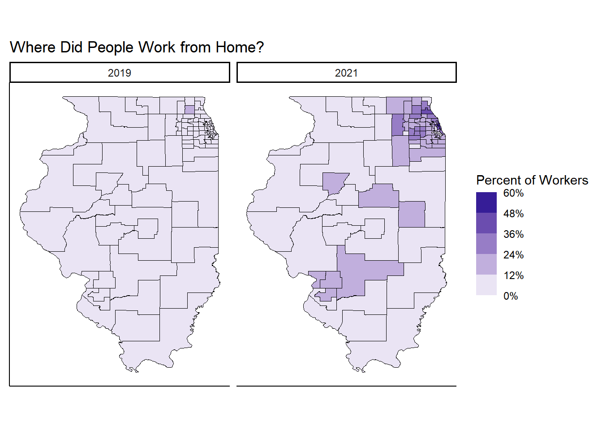
(b) Zoom in on Cook and Surrounding Counties
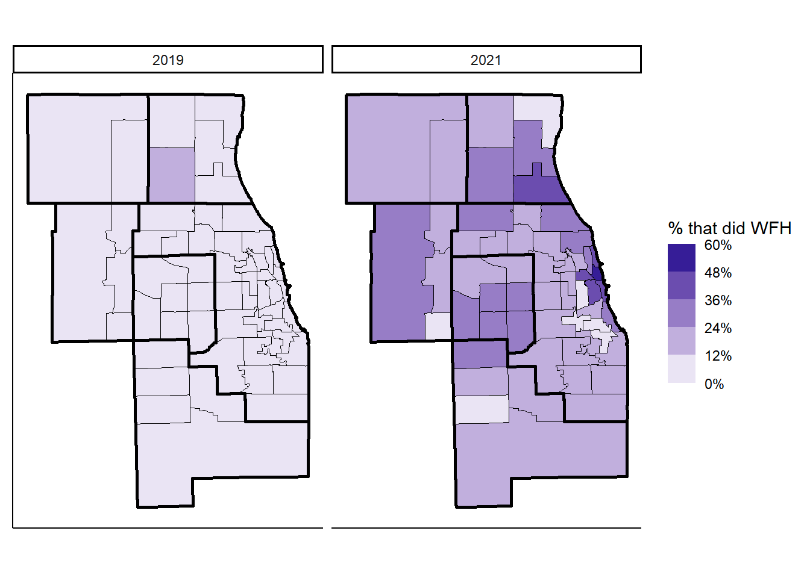
Figure 2.2: Change from 2019 to 2021 in who did WFH
(a) Graph includes PUMAs with Proportions of WFH Workers greater than 25% or less than 10%. Filtered PUMAs to increase legibility. DuPage had around 8% of the labor force working from home in 2019 and around 27% of its labor force working from home in 2021. There was ~20 percentage point increase between 2019 and 2021 for DuPage County. Working from home is based on TRANWORK variable from ACS 1-year surveys.
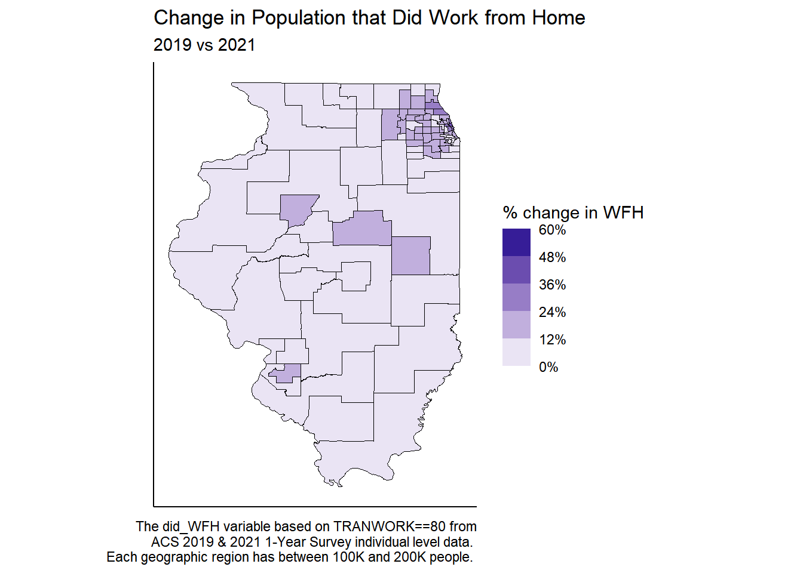
(b) A dot plot of change for Illinois PUMAs
2.1.2 WFH Feasibility
We compute these shares using our O*NET-derived classification of occupations that can be done at home and the occupational composition using ACS responses in each PUMA by 6-digit SOC in the BLS’s 2018 Occupational Employment Statistics.
Code
mapPUMAboth <-svytable(~YEAR+PUMA+CanWorkFromHome, design = dstrata)mapPUMAboth <- mapPUMAboth %>%as_tibble() %>%group_by(YEAR, PUMA) %>%mutate(Prop =round(n/sum(n), digits =3)) %>%filter(CanWorkFromHome =="Can WFH") %>%full_join(pumasIL, by =c("PUMA"="PUMACE10"))mapPUMAboth %>%ggplot(aes(fill = Prop)) +geom_sf(aes(geometry=geometry), color ="black")+labs(title ="Percent of PUMA area population that COULD work from home", subtitle =" based on occupation characteristics: 2019 vs 2021", caption ="Teleworkability based on D&N 2020 methodology. OCCSOC codes from ACS 1 year Survey data at individual level.") +theme_classic() +theme(axis.ticks =element_blank(), axis.text =element_blank(), panel.background =element_rect(fill='transparent'),plot.background =element_rect(fill='transparent', color=NA) )+scale_fill_steps2(#colors = c("white", "darkblue"), high ="darkblue", low ="black", limits =c(0,.6),n.breaks =4,show.limits=TRUE,nice.breaks=FALSE,name ="% Potentially Could WFH", label = scales::percent) +facet_wrap(~YEAR)Figure2b <- mapPUMAboth %>%filter(YEAR ==2021)%>%ggplot(aes(fill = Prop)) +geom_sf(aes(geometry = geometry), color ="black")+# labs(title = "Work from Home Feasibility Rate", # subtitle = " Based on Occupation Characteristics", # caption = "Teleworkability based on D&N 2020 methodology. # OCCSOC codes from ACS 1 year Survey data at individual level.") +theme_void() +theme(axis.ticks =element_blank(), axis.text =element_blank(), plot.title =element_text(hjust =0.5), plot.caption =element_text(hjust=.5), plot.subtitle =element_text(hjust =0.5), panel.background =element_rect(fill='transparent'), plot.background =element_rect(fill='transparent', color=NA) ) +scale_fill_steps2(#colors = c("white", "darkblue"), high ="darkblue", low ="black", limits =c(0,.6),n.breaks =4,show.limits=TRUE,nice.breaks=FALSE,name ="Labor force with\nWFH Feasibility", label = scales::percent)Figure2b#ggsave(Figure2b, "Figure2bV2.png", width=3, height=3, units = "in")
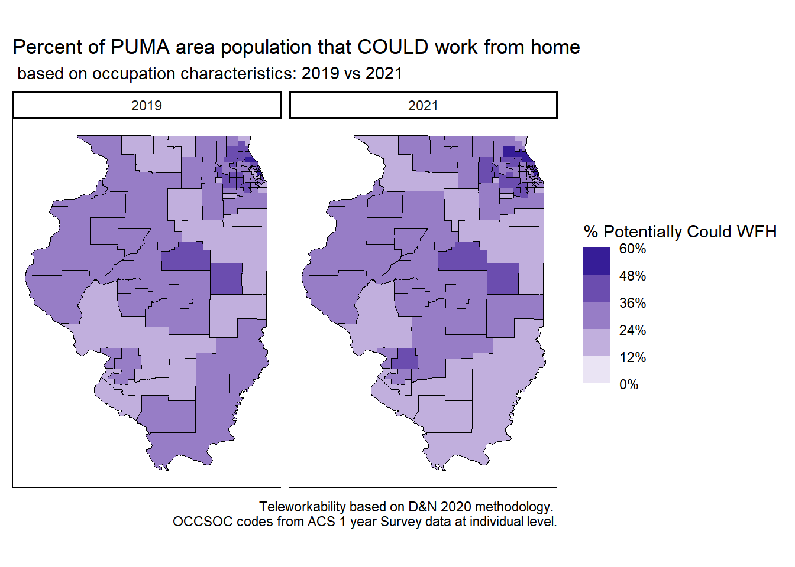
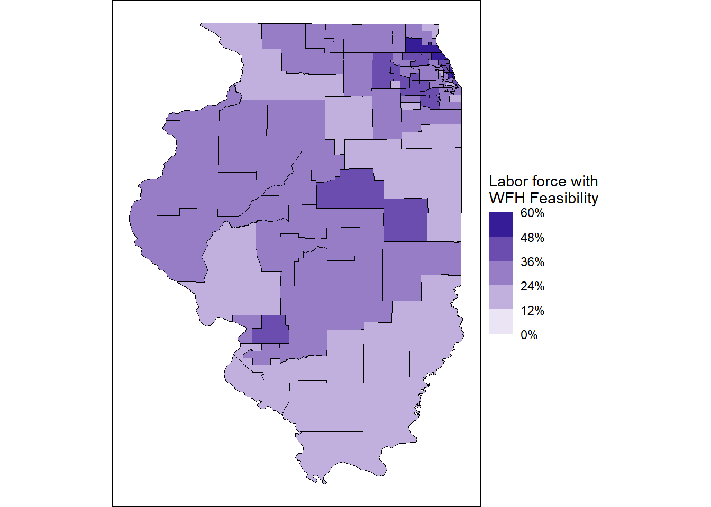
2.1.3 Internet Access
Code
## CINETHH is for access to internet # (either at home, somewhere else, or no access)# from joined dataframe. Not using survey objects or survey packagemapPUMAboth <- joined %>%group_by(YEAR, PUMA, CINETHH) %>% dplyr::summarize(weightedcount=sum(PERWT), #weighted unweightedcount =n()) %>%mutate(pct_weight = weightedcount/sum(weightedcount), pct_noweight = unweightedcount/sum(unweightedcount))%>%full_join(pumasIL, by =c("PUMA"="PUMACE10")) mapPUMAboth## identical to graph below made using svytable()# mapPUMAboth %>%# filter(CINETHH ==3) %>% # ggplot(aes(fill = pct_weight)) +# geom_sf(aes(geometry = geometry), color = "black")+ # scale_fill_continuous(low = "gray", high = "red", name = "% of Population", label = scales::percent)+# theme_minimal()+# theme(legend.title = element_blank(), axis.text.x = element_blank(), axis.text.y = element_blank(), panel.grid.major = element_blank(), panel.grid.minor = element_blank(), legend.position="right")+# labs(title = "Percent of population that did NOT have access to Internet", # subtitle = "Geography = PUMAs", # ) + theme(legend.title = element_blank())+# scale_fill_gradientn(colors = c("white", "red4"), # # limits = c(-.1,.1),# n = 7,# name = "Change in Access", label = scales::percent)+# facet_wrap(~YEAR)
Code
HHdesign <- survey::svydesign(id =~CLUSTER, strata =~STRATA, weights =~HHWT, data = joined)## Access internet using survey objectsmapPUMAboth <-svytable(~YEAR+PUMA+CINETHH, design = HHdesign)mapPUMAboth <- mapPUMAboth %>%as_tibble() %>%group_by(YEAR, PUMA) %>%mutate(Prop =round(n/sum(n), digits =3)) %>%full_join(pumasIL, by =c("PUMA"="PUMACE10"))mapPUMAboth %>%filter(CINETHH ==3 ) %>%ggplot(aes(fill = Prop)) +geom_sf(aes(geometry = geometry), color ="black")+scale_fill_binned(low ="white", high ="red4", name ="% of Population", label = scales::percent,n.breaks=4,nice.breaks=FALSE,show.limits=TRUE)+labs(title ="Percent of population that lacked access to Internet", caption ="Geography = PUMAs. Includes all dstrata responses for CINETHH. Does not subset for people who answered the commuting or occsoc questions.") +facet_wrap(~YEAR) +theme_minimal()+theme(legend.title =element_blank(), axis.text.x =element_blank(), axis.text.y =element_blank(), panel.grid.major =element_blank(), panel.grid.minor =element_blank(), legend.position="right")
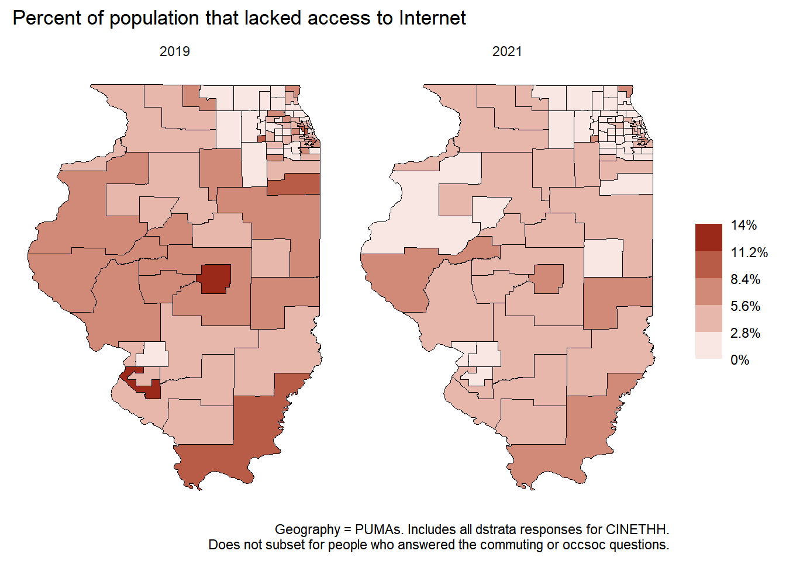
Code
# mapPUMAboth %>% # select(YEAR,Prop,CINETHH,geometry) %>%# filter(CINETHH ==3) %>% # pivot_wider( names_from ="YEAR", values_from = "Prop") %>%# mutate(pct_change = `2021`-`2019`) %>%# ggplot(aes(fill = pct_change)) +# geom_sf(aes(geometry = geometry), color = "black")+ # theme_minimal()+# theme(legend.title = element_blank(), axis.text.x = element_blank(), axis.text.y = element_blank(), panel.grid.major = element_blank(), panel.grid.minor = element_blank(), legend.position="right")+# scale_fill_gradientn(colors = c("green4", "white", "red4"), # limits = c(-.15,.15),# n = 7,# name = "Change in Access", label = scales::percent)+# labs(title = "Decrease in Lack of Internet Access", # subtitle = "Needs to be flipped so not double negative",# caption = "Rural areas were more likely to increase their access to internet at home. # Change in Percentage points = 2021 % - 2019 %.# Access to internet at home or another location is considered having Access to internet")mapPUMAboth %>%filter(CINETHH ==1) %>%pivot_wider(id_cols =-c(n), names_from ="YEAR", values_from ="Prop") %>%mutate(pct_change =`2021`-`2019`) %>%ggplot(aes(fill = pct_change)) +geom_sf(aes(geometry = geometry), color ="black")+theme_minimal()+theme(legend.title =element_blank(), axis.text.x =element_blank(), axis.text.y =element_blank(), panel.grid.major =element_blank(), panel.grid.minor =element_blank(), legend.position="right")+scale_fill_steps2(low="red4", mid="white", high="forestgreen", # limits = c(-.15,.15),n.breaks=4,show.limits=TRUE,nice.breaks=FALSE,name ="Chance in Access", label = scales::percent)+labs(title ="Change in Labor Force with Internet at home",subtitle ="2019 to 2021")
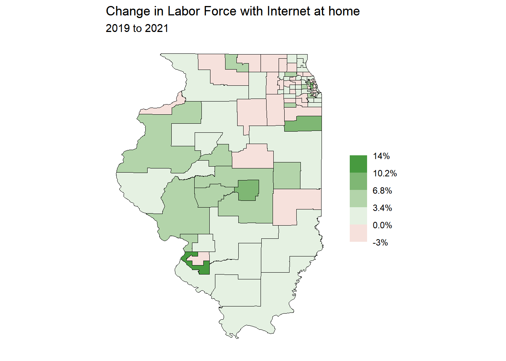
2.1.3.1 High Speed Internet
High speed internet is not the best measurement of due to them including DSL in their definition of “high speed.”
FCC standards say minimum 25Mbps for download and 3Mbps for upload. “traditionally, the way to determine if a connection is high speed is to test its ability to connect multiple devices that allow streaming and access to modern applications at the same time.
High speed internet allows teleworkers the ability to live and work in locations of their choosing without commuting to work. Also important for education, especially during COVID and online classes. Many families did not have the bandwidth necessary to support someone working from home and having children in online classes at the same time (let alone multiple children in online classes).
The Infrastructure Investment and Jobs Act (IIJA) defines “underserved” broadband as an Internet speed < 100 Mbps downstream and 20Mbps upstream.
Zoom needs between 2 and 3 Mbps for group video calls that look good.
1.0 Mbps to 1.5 Mbps for lower quality video calls that should still work.
For areas that had a decrease in access to high speed internet: Is it possible that they realized that their internet sucked when multiple people tried to use it? Most people didn’t know internet speeds before the pandemic. They thought they had high speed internet precovid and then when multiple people were at home, they realized they didn’t have enough bandwith for their internet demand?
Code
### Access to Hi speed internet #### from joined dataframe. Not using survey objects or survey packagemapPUMAboth <- joined %>%group_by(county_pop_type, YEAR, PUMA, CIHISPEED) %>% dplyr::summarize(weightedcount=sum(PERWT), #weighted unweightedcount =n()) %>%mutate(pct_weight = weightedcount/sum(weightedcount), pct_noweight = unweightedcount/sum(unweightedcount))%>%full_join(pumasIL, by =c("PUMA"="PUMACE10")) mapPUMAboth
Code
## Access to Hi speed internet using survey objectsmapPUMAboth <-svytable(~YEAR+PUMA+CIHISPEED, design = HHdesign)mapPUMAboth <- mapPUMAboth %>%as_tibble() %>%group_by(YEAR, PUMA) %>%mutate(Prop =round(n/sum(n), digits =3)) %>%full_join(pumasIL, by =c("PUMA"="PUMACE10"))mapPUMAboth %>%filter(CIHISPEED ==10) %>%ggplot(aes(fill = Prop)) +geom_sf(aes(geometry = geometry), color ="black")+labs(title ="Percent of population WITH High Speed Internet", subtitle ="", caption ="") +facet_wrap(~YEAR)+scale_fill_binned(low ="white", high ="forestgreen", n.breaks =4,show.limits =TRUE,# nice.breaks =FALSE,name ="Population %", label = scales::percent)+Alea_theme()mapPUMAboth %>%pivot_wider(id_cols =-c(n), names_from ="YEAR", values_from ="Prop") %>%mutate(pct_change =`2021`-`2019`) %>%ggplot(aes(fill = pct_change)) +geom_sf(aes(geometry = geometry), color ="black")+labs(title ="Change in Access to High Speed Internet"# caption = "Percentage point change: 2021 PUMA% with CIHISPEED=10 - 2019 PUMA% for ACS variable CIHISPEED=10." ) +scale_fill_steps2(high ="forestgreen", mid ="white", low ="red4", n.breaks=4,nice.breaks =FALSE,show.limits =TRUE,name ="Change in Access", label = scales::percent_format(suffix ="")) +Alea_theme()
Figure 2.3: High Speed Internet Access at the PUMA level
(a) Each PUMA has between 100K and 200K people. PUMAs are the smallest identifiable geographic unit for individual survey responses
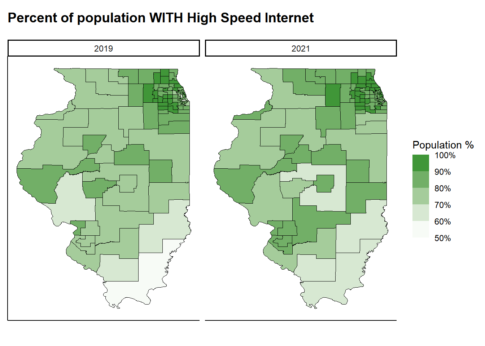
(b) Percentage point change: 2021 PUMA% with CIHISPEED=10 minus 2019 PUMA% for ACS variable CIHISPEED=10.
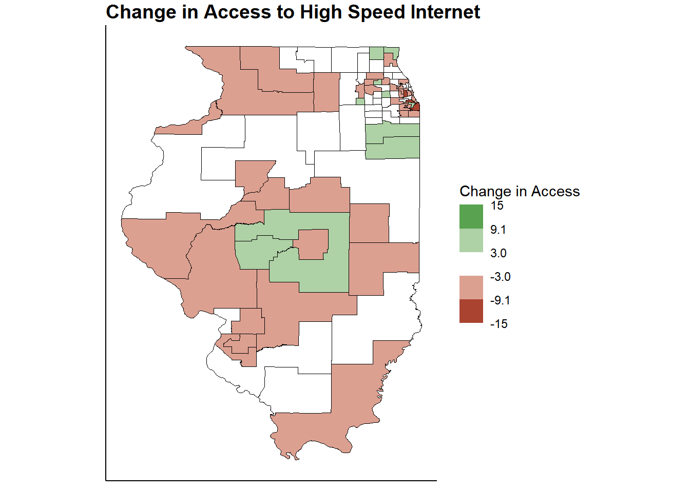
2.2 County Level
For county FIPS:
- 19 is Champaign
- 31 is Cook
- 37 is DeKalb
- 43 is DuPage
- 89 is Kane
- 111 is McHenry
2.2.1 Internet Access
Code
## Access internet using survey objectsmapPUMAboth <-svytable(~CINETHH+YEAR+countyFIP, design = HHdesign)mapPUMAboth <- mapPUMAboth %>%as_tibble() %>%group_by(YEAR, countyFIP) %>%mutate(Prop =round(n/sum(n), digits =3)) %>%# filter(CINETHH == 3 ) %>% full_join(countyIL, by =c("countyFIP"="COUNTYFP"))mapPUMAboth %>%filter(CINETHH ==3 ) %>%filter(YEAR !="NA") %>%ggplot(aes(fill = Prop)) +geom_sf(aes(geometry = geometry), color ="black")+labs(title ="Percent of population that lacked access to Internet", # caption = "Geography = Counties with populations > 100K. Responses from counties with less than 100K have the county identifier removed." ) +facet_wrap(~YEAR) +theme(legend.title =element_blank())+scale_fill_steps2( low ="white", high ="red4", n.breaks=4,nice.breaks =FALSE,show.limits =TRUE,"Population %", label = scales::percent) +Alea_theme()### Change in LACK OF ACCESSmapPUMAboth %>%pivot_wider(id_cols =-c(n), names_from ="YEAR", values_from ="Prop") %>%mutate(pct_change =`2021`-`2019`) %>%ggplot(aes(fill = pct_change)) +geom_sf(aes(geometry = geometry), color ="black")+labs(title ="Change in access to Internet",# caption = "Change in Percentage points = 2021 % lacking access - 2019 % lacking access.# Uses CINETHH == 3 for not having internet access. A decrease is a good thing!" ) +scale_fill_steps2(low ="forestgreen", mid ="white", high ="red4", n.breaks=5,# nice.breaks = FALSE,show.limits =TRUE,name ="Change in Access", label = scales::percent_format(suffix ="")) +Alea_theme()
Geography = Counties with populations > 100K. Responses from counties with less than 100K have the county identifier removed.
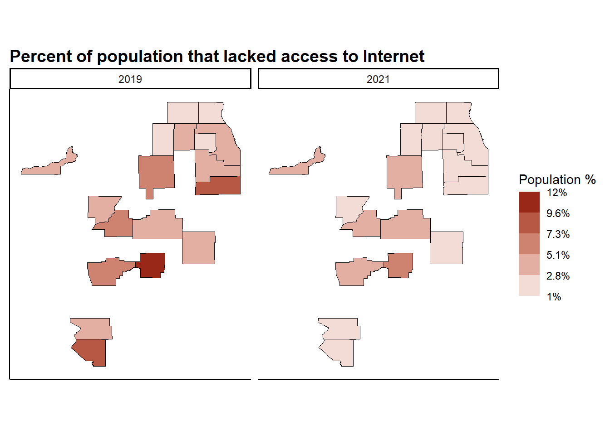
Change in Percentage points = 2021 % lacking access - 2019 % lacking access. Uses CINETHH == 3 for not having internet access. A decrease is a good thing!
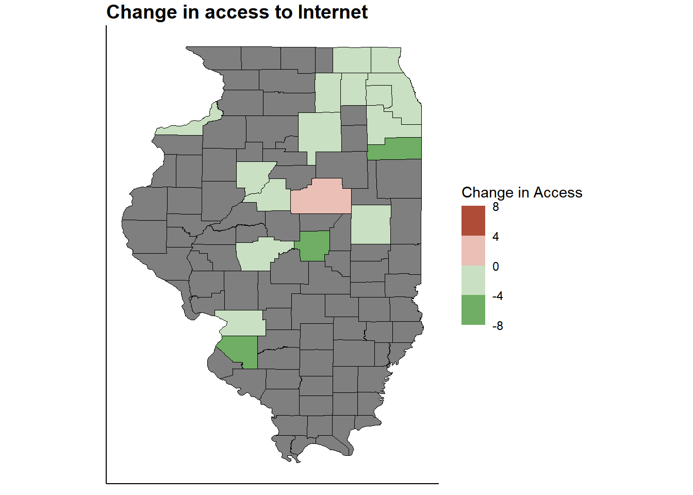
2.2.1.1 High Speed Internet
Code
### Access to Hi speed internet #### from joined dataframe. Not using survey objects or survey package# mapPUMAboth <- joined %>% # group_by(YEAR, countyFIP, CINETHH) %>% # dplyr::summarize(weightedcount=sum(PERWT), #weighted # unweightedcount = n()) %>% # mutate(pct_weight = weightedcount/sum(weightedcount), # pct_noweight = unweightedcount/sum(unweightedcount))%>% # filter(CINETHH ==3) %>% # full_join(countyIL, by = c("countyFIP" = "COUNTYFP")) # mapPUMAboth# # mapPUMAboth %>%# ggplot(aes(fill = pct_weight)) +# geom_sf(aes(geometry = geometry), color = "black")+ # labs(title = "Percent of population that did NOT have access to Internet", # subtitle = "Geography = County", # ) + # Alea_theme() +theme(legend.title = element_blank())+# scale_fill_gradientn(colors = c( "white", "red4"), # n = 5,# name = "Population %", label = scales::percent)+facet_wrap(~YEAR)## Access to High speed internet using survey objectsmapPUMAboth <-svytable(~YEAR+countyFIP+CIHISPEED, design = HHdesign)mapPUMAboth <- mapPUMAboth %>%as_tibble() %>%group_by(YEAR, countyFIP) %>%mutate(Prop =round(n/sum(n), digits =3)) %>%filter(CIHISPEED !=20 ) %>%full_join(countyIL, by =c("countyFIP"="COUNTYFP")) mapPUMAboth %>%filter(CIHISPEED ==10) %>%ggplot(aes(fill = Prop)) +geom_sf(aes(geometry = geometry), color ="black")+labs(title ="Percent of population with High-speed Internet" ) +facet_wrap(~YEAR)+scale_fill_binned(low ="white", high ="green4", na.value =NA,n.breaks =4,show.limits=TRUE,nice.breaks =FALSE,name ="Percent of Population", label = scales::percent)+Alea_theme()fig7b <- mapPUMAboth %>%pivot_wider(id_cols =-c(n), names_from ="YEAR", values_from ="Prop") %>%mutate(pct_change =`2021`-`2019`) %>%ggplot(aes(fill = pct_change)) +geom_sf(aes(geometry = geometry), color ="black") +theme_void()+scale_fill_steps2(low ="red4", mid="white", high ="forestgreen", n.breaks =7,na.value="gray",# nice.breaks=FALSE,show.limits =TRUE,# limits = c(-.2,.2),name =" % Point Change", label = scales::percent_format(suffix =""))#+labs(title = "Change in access to High Speed Internet")ggsave("Figure7bV2.png", limitsize =FALSE, width =5, height =4, units ="in")#ggsave("Figure7b.eps", limitsize = FALSE,width = 8, height = 4, units = "in")#ggsave("Figure7b.pdf", limitsize = FALSE,width = 8, height = 4, units = "in")
Figure 2.4: ?(caption)
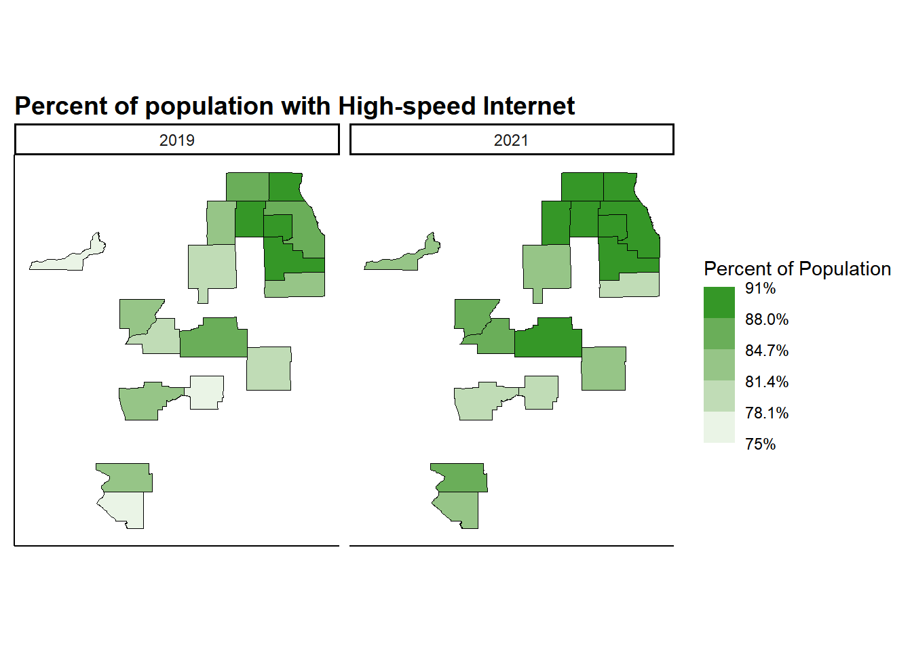
Code
# as a bar graph ## # mapPUMAboth %>%# filter(YEAR==2021) %>%# ggplot(aes(group = countyFIP)) +# geom_bar(aes(y = Prop, x= reorder(NAME, Prop)), stat = "identity") +# #Alea_theme() + # labs(title = "Proportion with High Speed Internet", subtitle = "In 2021", x = "", y = "" )+# coord_flip()# as a dot graph ## order <- mapPUMAboth %>%as_tibble() %>%filter(YEAR ==2019& NAME !="NA"& CIHISPEED =="10") %>%select(NAME, Prop_2019= Prop)mapPUMAboth <-left_join(mapPUMAboth, order)mapPUMAboth %>%filter(NAME !="NA"& YEAR !="NA")%>%ggplot(aes(x = Prop, y=reorder(NAME, Prop_2019)))+geom_line(aes(group = NAME))+geom_point(aes(color=YEAR), size =3) +theme_minimal() +theme(legend.position ="none", legend.title =element_blank(),plot.title.position ="plot",# panel.background = element_rect(fill='transparent'), #transparent panel bgplot.background =element_rect(fill='transparent', color=NA) #transparent plot bg )+scale_color_brewer(palette="Paired", labels =c("2019", "2021"), direction =1)+labs(title ="Change in Access to High-speed Internet", x ="", y ="" ) +scale_x_continuous(label = scales::percent)#ggsave("Figure7v2.png", limitsize = FALSE, width = 5, height = 4, units = "in")#ggsave("Figure7.eps", limitsize = FALSE,width = 8, height = 4, units = "in")#ggsave("Figure7.pdf", limitsize = FALSE,width = 8, height = 4, units = "in")
2.2.2 Did work from home
Code
mapPUMAboth <-svytable(~did_wfh_labels+YEAR+countyFIP, design = dstrata)mapPUMAboth <- mapPUMAboth %>%as_tibble() %>%group_by(YEAR, countyFIP) %>%mutate(Prop =round(n/sum(n), digits =3)) %>%full_join(countyIL, by =c("countyFIP"="COUNTYFP"))mapPUMAboth %>%filter(did_wfh_labels =="Did WFH") %>%ggplot(aes(fill = Prop)) +geom_sf(aes(geometry = geometry), color ="black")+labs(title ="Percent of Labor Force that Worked from Home", caption ="Geography = Counties with populations > ~60K") +facet_wrap(~YEAR) +scale_fill_binned(low="white", high ="darkblue", na.value ="gray",show.limits=TRUE,n.breaks =4,name ="Population %", label = scales::percent) +Alea_theme()mapPUMAboth %>%pivot_wider(id_cols =-c(n), names_from ="YEAR", values_from ="Prop") %>%mutate(pct_change =`2021`-`2019`) %>%ggplot(aes(fill = pct_change)) +geom_sf(aes(geometry = geometry), color ="black")+Alea_theme()+scale_fill_binned(low="white", high ="darkblue", na.value ="gray",show.limits=TRUE,nice.breaks=FALSE,n.breaks =4,limits =c(0,.20),name ="% Point Change", label = scales::percent_format(suffix =""))#+# labs(title = "Percentage Point Change in Labor Force that Did WFH")#ggsave("Figure4bV2.eps", limitsize = FALSE, width = 8, height = 5, units = "in")#ggsave("Figure4bV2.pdf", limitsize = FALSE,width = 8, height = 5, units = "in")#ggsave("Figure4bV2.png", limitsize = FALSE, width = 8, height = 5, units = "in")
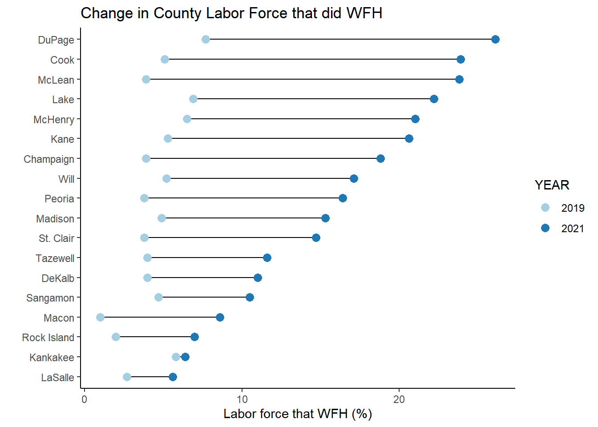
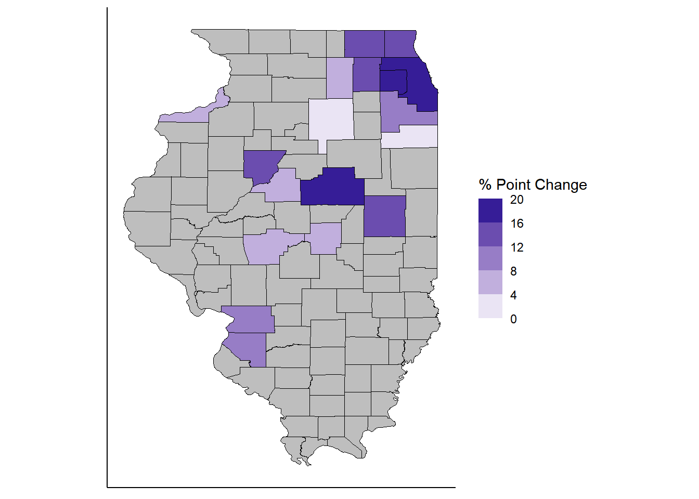
Code
# as a dot graph ## order <- mapPUMAboth %>%as_tibble() %>%filter(YEAR ==2021& did_wfh_labels =="Did WFH") %>%select(countyFIP, Prop_2021 = Prop)mapPUMAboth <-left_join(mapPUMAboth, order)mapPUMAboth %>%filter(did_wfh_labels =="Did WFH"& NAME !="NA"& YEAR !="NA")%>%ggplot(aes(x = Prop*100, y=reorder(NAME, Prop_2021*100)))+geom_line(aes(group = NAME))+theme_classic()+geom_point(aes(color=YEAR), size =3) +scale_color_brewer(palette="Paired",# labels = c("% WFH in 2019", "% WFH in 2021"), direction =1)+labs(title ="Change in County Labor Force that did WFH",# caption = "DuPage had around 8% of the labor force working from home in 2019 and # around 27% of its labor force working from home in 2021. # There was ~20 percentage point increase between 2019 and 2021 for DuPage County. # Working from home is based on TRANWORK variable from ACS 1-year surveys.", x ="Labor force that WFH (%)", y ="")#+ scale_x_continuous(label = scales::percent)ggsave("Figure4a.eps", limitsize =FALSE,width =8, height =5, units ="in")ggsave("Figure4a.pdf", limitsize =FALSE,width =8, height =5, units ="in")ggsave("Figure4a.png", limitsize =FALSE, width =8, height =5, units ="in")
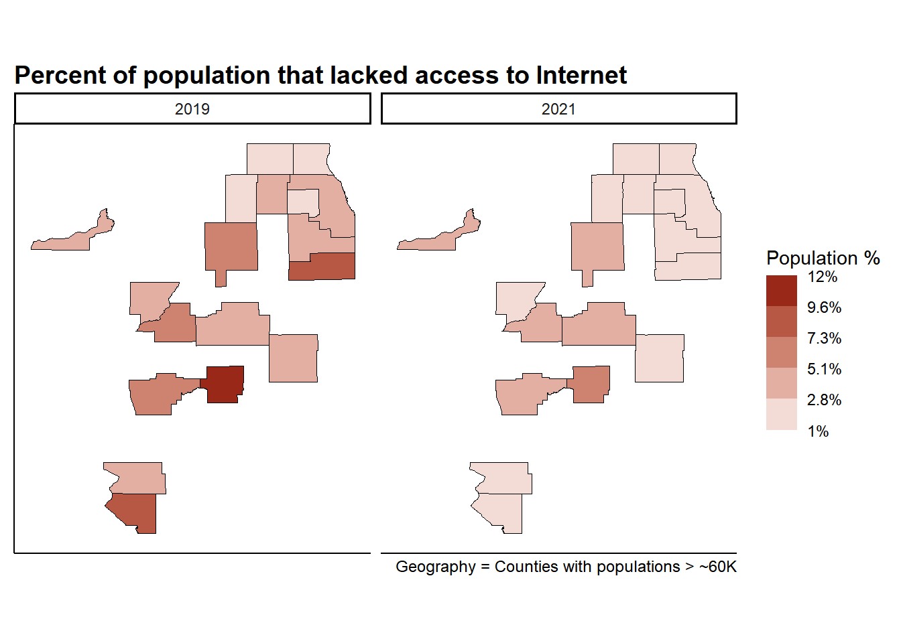
2.2.3 Could work from home
Work from Home Feasibility is based an expanded version of WFH feasibility used originally in Dingel & Niemen paper.1 A person’s occupation indicates the likelihood of if they could work from home. Counties had essentially no change in the make up of occupations in Illinois that could be done from home. Counties with less than 100,000 people are gray (Countyfips = 000 have county identifier removed from survey responses).
CanWorkFromHome is categorical variable with 3 options.
Code
mapdataboth <- joined %>%filter(CanWorkFromHome !="NA" )%>%# create percentages withing missing values included. aka valid percent.group_by(county_pop_type, YEAR, countyFIP, CanWorkFromHome) %>% dplyr::summarize(weightedcount=sum(PERWT), #weighted unweightedcount =n() ) %>%mutate(pct_weight = weightedcount/sum(weightedcount), pct_noweight = unweightedcount/sum(unweightedcount))%>%full_join(countyIL, by =c("countyFIP"="COUNTYFP")) # %>%#mutate(pct_weight = ifelse(is.na(county_pop_type), 0.04486351, pct_weight))%>%# mutate(pct_weight = ifelse(is.na(county_pop_type), 0.09237573, pct_weight))# %>%# mutate(did_wfh_labels = ifelse(is.na(did_wfh_labels),"Rural", did_wfh_labels))mapdataboth <-svytable(~CanWorkFromHome+YEAR+countyFIP, design = dstrata)mapdataboth <- mapdataboth %>%as_tibble() %>%group_by(YEAR, countyFIP) %>%mutate(Prop =round(n/sum(n), digits =3)) %>%# filter(CanWorkFromHome == "Can WFH") %>%filter(YEAR ==2021& CanWorkFromHome =="Can WFH")%>%full_join(countyIL, by =c("countyFIP"="COUNTYFP"))# mapdataboth %>%# filter(CanWorkFromHome == "Can WFH") %>%# ggplot(aes(fill = Prop)) +# geom_sf(aes(geometry = geometry), color = "black")+ # labs(title = "Percent of county population that COULD work from home",# caption = "# ") + # facet_wrap(~YEAR)+# Alea_theme()+ # scale_fill_binned(low= "white", high ="darkblue", # na.value = "gray",# show.limits=TRUE,# nice.breaks=FALSE,# n.breaks = 4,# limits = c(0,.45),# label = scales::percent)Figure2a <- mapdataboth %>%#filter(YEAR == 2021 & CanWorkFromHome == "Can WFH")%>% ggplot(aes(fill = Prop)) +geom_sf(aes(geometry = geometry), color ="black")+# labs(title = "Work from Home Feasibility Rate", # subtitle = " Based on Occupation Characteristics", # caption = "Teleworkability based on D&N 2020 methodology. # OCCSOC codes from ACS 1 year Survey data at individual level.") +theme_void() +theme(axis.ticks =element_blank(), axis.text =element_blank(), plot.title =element_text(hjust =0.5), plot.caption =element_text(hjust=.5), panel.background =element_rect(fill='transparent'), #transparent panel bgplot.background =element_rect(fill='transparent', color=NA), #transparent plot bg plot.subtitle =element_text(hjust =0.5)) +scale_fill_binned(low="white", high ="darkblue", na.value ="gray",show.limits=TRUE,nice.breaks=FALSE,n.breaks =4,limits =c(0,.6),name ="Labor Force with\nWFH Feasibility", label = scales::percent)Figure2a# ggsave("Figure2a.eps", limitsize = FALSE,width = 8, height = 4, units = "in")# ggsave("Figure2a.pdf", limitsize = FALSE,width = 8, height = 4, units = "in")ggsave("Figure2a.png", limitsize =FALSE, width =8, height =4, units ="in")Figure2b# ggsave("Figure2b.eps", limitsize = FALSE,width = 8, height = 4, units = "in")# ggsave("Figure2b.pdf", limitsize = FALSE,width = 8, height = 4, units = "in")ggsave("Figure2b.png", limitsize =FALSE, width =8, height =4, units ="in")
Figure 2.5: Percent of Labor Force who could Feasibily Work from Home
(a) Counties
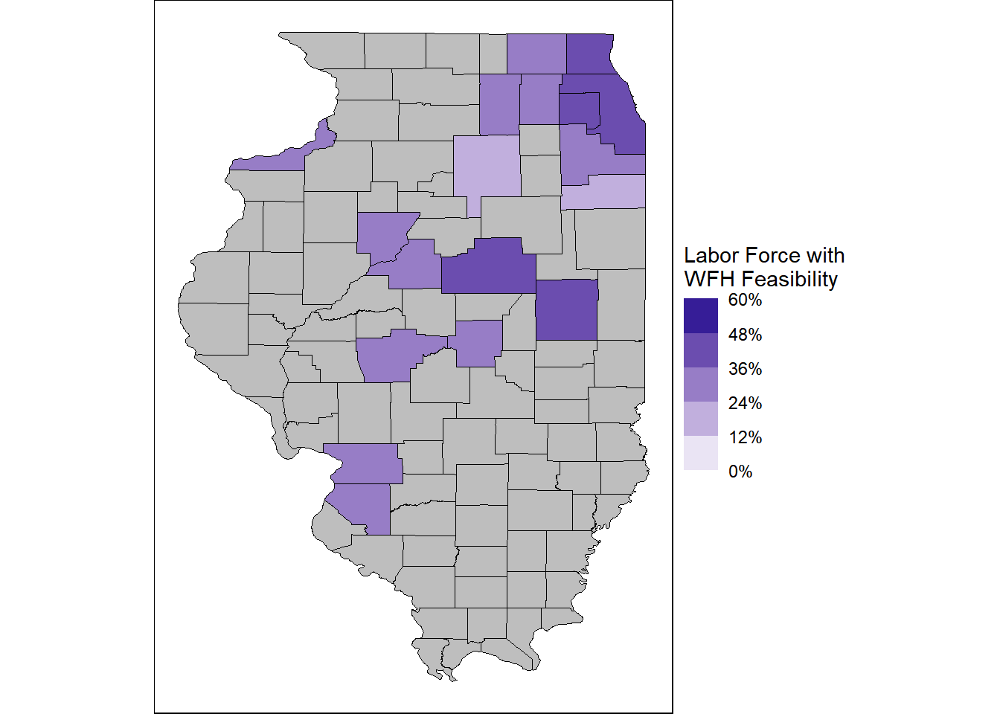
(b) PUMAs
Code
mapdataboth
Proportion of Workers in each WFH Feasibility category
# Geographic Data```{r setup, warning=FALSE, message=FALSE, include=FALSE}library(scales)library(reldist)library(pollster)library(labelled)library(weights)library(tigris)library(ipumsr)library(srvyr)library(survey)library(tidyverse)library(naniar)library(gmodels)library(gtsummary)library(quarto)library(huxtable) # for summ() and regression output formatting# Create the DB connection with the default name expected by PTAXSIM functionslibrary(jtools)library(modelsummary)library(car)knitr::opts_chunk$set(warning=FALSE, message=FALSE, tidy =TRUE)load("WFH.RData")``````{r include=FALSE}Alea_theme <-function(){ theme_classic() %+replace%#replace elements we want to changetheme(#grid elementspanel.grid.major =element_blank(), #strip major gridlinespanel.grid.minor =element_blank(), #strip minor gridlinesaxis.ticks =element_blank(), #strip axis ticksaxis.text.x =element_blank(),axis.text.y =element_blank(),#since theme_minimal() already strips axis lines, #we don't need to do that again#text elementsplot.title =element_text( #titlesize =14, #set font sizeface ='bold', #bold typefacehjust =0, #left alignvjust =2), #raise slightlyplot.subtitle =element_text( #subtitlesize =14), #font sizeplot.caption =element_text( #captionsize =9, #font sizehjust =1), #right alignaxis.title =element_text( #axis titlessize =10), #font sizeaxis.text =element_text( #axis textsize =9) #font size#since the legend often requires manual tweaking #based on plot content, don't define it here )}````r scales::percent(318174/(318174+5632943), digits = 2)` of workers who did WFH in Illinois in 2019.`r scales::percent(1140835/(1140835+4604673), digits = 2)` of workers who did WFH in Illinois in 2021.`r scales::percent(490937/(490937+5951117), digits = 2)` of remote workers (people who had earned income) who worked outside of IL but lived in IL in 2019.`r scales::percent(525507/(525507+5745508), digits = 2)` of WFH workers who worked outside of IL in 2021```{r include = FALSE}table(joined$PWSTATE2)svytable(~did_wfh_labels+YEAR+work_in_IL, design = dstrata) svytable(~has_incearn_labels+YEAR+work_in_IL, design = dstrata) svytable(~work_in_IL+YEAR+has_incearn_labels, design = dstrata) ```Average proportion of workers for responses from identified counties (populations \> 100,000) and deidentified responses from counties with populations below the ACS threshold.```{r}#| tbl-cap: "Percent of workers who could feasibily WFH and the percent of workers who did actually WFH"#| column: pagejoined %>%group_by(YEAR, county_pop_type )%>%summarize(avg_teleworkable =mean(teleworkable, weight = PERWT),avg_did_WFH =mean(did_wfh, na.rm=TRUE, weight = PERWT)) %>%rename("Pct of Workers with WFH Feasibility"= avg_teleworkable, "Pct who did WFH"= avg_did_WFH)```## PUMA LevelPUMAs contain around 100,000 people.For the counties that can be identified in the data (populations \> 100,000 & \< 200,000. 1-Year ACS have minimum of 65,000 population), the census summary tables are close but not identical to the tables calculated with the ACS sample data. "In this way more densely populated areas, like Chicago and Cook County will contain many PUMAs within their boundaries, while multiple sparsely populated entire counties, e.g., Jackson, Perry, Franklin, and Williamson, will comprise one PUMA." - [IPUMS v other Geographies](https://iecam.illinois.edu/browse/about-public-use-microdata-areas-pumas#:~:text=What%20is%20a%20PUMA%3F,Community%20Survey%201%2Dyear%20estimates)\```{r}#| tbl-cap: "Observations per PUMA"obs_perPUMA<- joined %>%group_by(PUMA, YEAR) %>% dplyr::summarize(weightedcount=sum(PERWT), #weighted unweightedcount =n()) %>%arrange(unweightedcount)### Minimimum observations are 271 in PUMA area 03528obs_perPUMA``````{r include=FALSE}joined %>%group_by(county_pop_type, YEAR, did_wfh_labels) %>% dplyr::summarize(weightedcount=sum(PERWT), #weighted unweightedcount =n()) %>%mutate(pct_weight = weightedcount/sum(weightedcount), pct_noweight = unweightedcount/sum(unweightedcount)) %>%arrange(unweightedcount)```Economic Characteristics summary table: [link](https://data.census.gov/table?t=Employment&g=040XX00US17,17$0500000&tid=ACSDP1Y2021.DP03&moe=false&tp=false)```{r warning = FALSE, message=FALSE, results='hide'}# PUMA shapefilespumasIL <-pumas("IL", cb=T, year=2019)#pumasIL %>% select(PUMACE10, GEOID10, NAME10) %>% write_csv("PUMAsIL.csv")#county shapefilescountyIL <-counties("IL", cb=T, year=2019)#pumasdf <- fortify(pumasIL, region = 'PUMACE10')```### Did WFH```{r}#| column: marginmapPUMAboth <-svytable(~YEAR+PUMA+did_wfh_labels, design = dstrata)mapPUMAboth <- mapPUMAboth %>%as_tibble() %>%group_by(YEAR, PUMA) %>%mutate(Prop =round(n/sum(n), digits =3)) %>%filter(did_wfh_labels =="Did WFH") %>%full_join(pumasIL, by =c("PUMA"="PUMACE10"))``````{r create5a}#| tbl-cap: "Proportion of workers per PUMA who did WFH each year"#| column: page#| results: holdmapPUMAboth %>%select(YEAR, PUMA, Prop, n, NAME10)figure5a <- mapPUMAboth %>%ggplot(aes(fill = Prop)) +geom_sf(aes(geometry = geometry), color ="black")+labs(title ="Where Did People Work from Home?", # subtitle = "Percent of PUMA population in 2019 & 2021 that did WFH" ) +theme_classic() +theme(axis.ticks =element_blank(), axis.text =element_blank())+scale_fill_steps2(high ="darkblue", low ="black", limits =c(0,.6),n.breaks =4,show.limits=TRUE,nice.breaks=FALSE,name ="Percent of Workers", label = scales::percent)+facet_wrap(~YEAR) ``````{r include = FALSE}#ggsave("Figure5a.eps", limitsize = FALSE,width = 8, height = 5, units = "in")#ggsave("Figure5a.pdf", limitsize = FALSE,width = 8, height = 5, units = "in")#ggsave("Figure5aV2.png", limitsize = FALSE, width = 8, height = 5, units = "in")``````{r}#| column: page#| code-fold: true#| layout-ncol: 2mapPUMAboth <-svytable(~YEAR+PUMA+did_wfh_labels, design = dstrata)mapPUMAboth %>%as_tibble() %>%group_by(YEAR, PUMA) %>%mutate(Prop =round(n/sum(n), digits =3)) %>%filter(did_wfh_labels =="Did WFH") %>%pivot_wider(id_cols =-c(n), names_from ="YEAR", values_from ="Prop") %>%mutate(pct_change=`2021`-`2019`) %>%full_join(pumasIL, by =c("PUMA"="PUMACE10"))%>%arrange(-pct_change) %>%select(-c( STATEFP10:GEOID10, LSAD10:geometry)) %>%head()mapPUMAboth %>%as_tibble() %>%group_by(YEAR, PUMA) %>%mutate(Prop =round(n/sum(n), digits =3)) %>%filter(did_wfh_labels =="Did WFH") %>%pivot_wider(id_cols =-c(n), names_from ="YEAR", values_from ="Prop") %>%mutate(pct_change=`2021`-`2019`) %>%full_join(pumasIL, by =c("PUMA"="PUMACE10"))%>%arrange(pct_change) %>%select(-c(STATEFP10:GEOID10, LSAD10:geometry,)) %>%head()``````{r createfig5-b-c-d-e}#| code-fold: truefigure5b <- mapPUMAboth %>%as_tibble() %>%group_by(YEAR, PUMA) %>%mutate(Prop =round(n/sum(n), digits =3)) %>%filter(did_wfh_labels =="Did WFH") %>%pivot_wider(id_cols =-c(n), names_from ="YEAR", values_from ="Prop") %>%mutate(pct_change=`2021`-`2019`) %>%full_join(pumasIL, by =c("PUMA"="PUMACE10")) %>%ggplot(aes(fill = pct_change)) +geom_sf(aes(geometry = geometry), color ="black")+labs(title ="Change in Population that Did Work from Home", subtitle ="2019 vs 2021", caption ="The did_WFH variable based on TRANWORK==80 from ACS 2019 & 2021 1-Year Survey individual level data. Each geographic region has between 100K and 200K people. ") +theme_classic() +theme(axis.ticks =element_blank(), axis.text =element_blank())+scale_fill_steps2(#colors = c("white", "darkblue"), high ="darkblue", low ="black", limits =c(0,.6),n.breaks =4,show.limits=TRUE,nice.breaks=FALSE,name ="% change in WFH", label = scales::percent)closeupFIPs<-c("097", "111", "089","043", "197", "031"#,"093"# ,"007" )mapPUMAboth <-svytable(~YEAR+countyFIP+PUMA+ did_wfh_labels, design = dstrata)mapPUMAboth <- mapPUMAboth %>%as_tibble() %>%filter(countyFIP %in% closeupFIPs) %>%group_by(YEAR, PUMA) %>%mutate(Prop =round(n/sum(n), digits =3)) %>%filter(did_wfh_labels =="Did WFH"& n !="0") %>%inner_join(pumasIL, by =c("PUMA"="PUMACE10"))#mapPUMAboth %>% select(YEAR, countyFIP, PUMA, Prop, n, NAME10)countyborders<- countyIL %>%filter(COUNTYFP %in% closeupFIPs)#countybordersfigure5c <-ggplot(mapPUMAboth, aes(fill = Prop)) +geom_sf(aes(geometry = geometry), color ="black")+# labs(title = "Where Did People Work from Home?: Close up View", # subtitle = "Percent of PUMA population in 2019 & 2021 that did WFH") +theme_classic() +theme(axis.ticks =element_blank(), axis.text =element_blank())+scale_fill_binned(#colors = c("white", "darkblue"), high ="darkblue", low ="white", limits =c(0,.6),n.breaks =4,show.limits=TRUE,nice.breaks=FALSE,name ="% that did WFH",label = scales::percent)+facet_wrap(~YEAR) figure5c <- figure5c +geom_sf(data = countyborders, fill=NA, color="black", lwd =1) +theme_classic()+theme(axis.ticks =element_blank(), axis.text =element_blank())+facet_wrap(~YEAR)# as a dot graph ## mapPUMAboth <-svytable(~YEAR+PUMA+did_wfh_labels, design = dstrata)mapPUMAboth <- mapPUMAboth %>%as_tibble() %>%group_by(YEAR, PUMA) %>%mutate(Prop =round(n/sum(n), digits =3)) %>%filter(did_wfh_labels =="Did WFH") %>%full_join(pumasIL, by =c("PUMA"="PUMACE10"))order <- mapPUMAboth %>%as_tibble() %>%filter(YEAR ==2021& did_wfh_labels =="Did WFH") %>%filter(Prop >0.25| Prop <0.1) %>%select(NAME10, Prop_2021 = Prop)mapPUMAboth <-inner_join(mapPUMAboth, order) %>%filter()mapPUMAboth %>%ungroup() %>%filter(#did_wfh_labels == "Did WFH" #& NAME10 != "NA" & YEAR != "NA" )%>%# filter(YEAR == 2021 & (Prop > 0.25 | Prop < 0.1) ) %>%select(NAME10, PUMA, Prop) %>%distinct() %>%arrange(desc(Prop)) %>%head()figure5d <- mapPUMAboth %>%filter(did_wfh_labels =="Did WFH"#& NAME10 != "NA" & YEAR != "NA" )%>%filter(Prop >0.25| Prop <0.1) %>%ggplot(aes(x = Prop*100, y=reorder(PUMA, Prop_2021*100)))+geom_line(aes(group = PUMA))+theme_classic()+geom_point(aes(color=YEAR), size =3) +scale_color_brewer(palette="Paired", labels =c("% WFH in 2019", "% WFH in 2021"), direction =1)+labs(title ="Change in PUMA Labor Force that did WFH",subtitle ="Percent of Labor Force within PUMA that Did Work from Home", # caption = "Graph includes PUMAs with Proportions of WFH Workers greater # than 25% or less than 10%. Filtered PUMAs to increase legibility. # DuPage had around 8% of the labor force working from home in 2019 and # around 27% of its labor force working from home in 2021. # There was ~20 percentage point increase between 2019 and 2021 for DuPage County. # Working from home is based on TRANWORK variable from ACS 1-year surveys.", x ="Percentage Points", y ="")mapPUMAboth <-svytable(~YEAR+PUMA+countyFIP+did_wfh_labels, design = dstrata)figure5e <- mapPUMAboth %>%as_tibble() %>%filter(countyFIP %in% closeupFIPs) %>%group_by(YEAR, PUMA) %>%mutate(Prop =round(n/sum(n), digits =3)) %>%filter(did_wfh_labels =="Did WFH"& n !="0") %>%pivot_wider(id_cols =-c(n), names_from ="YEAR", values_from ="Prop") %>%mutate(pct_change=`2021`-`2019`) %>%inner_join(pumasIL, by =c("PUMA"="PUMACE10")) %>%ggplot(aes(fill = pct_change)) +geom_sf(aes(geometry = geometry), color ="black")+labs(title ="Change in Population that Did Work from Home", subtitle ="2019 vs 2021") +theme_classic() +theme(axis.ticks =element_blank(), axis.text =element_blank()) +scale_fill_steps2( high ="darkblue", low ="black", limits =c(0,.6),n.breaks =4,show.limits=TRUE,# nice.breaks=FALSE,name =" Pct Pt change that did WFH",label = scales::percent_format(suffix =""))``````{r plot-5a-5c}#| label: fig-Figure5-WhereDidpeopleWFH#| fig-cap: "Percent of Workers who Did Work From Home: 2019 & 2021"#| fig-cap-location: top#| fig-subcap: #| - "The did_WFH variable is based on TRANWORK==80 from ACS 2019 & 2021 1-Year Survey individual level data. Each geographic region, a PUMA, has between 100K and 200K people."#| - "Zoom in on Cook and Surrounding Counties"#| column: page#| layout-ncol: 2#| echo: false plot(figure5a)plot(figure5c)``````{r}#| label: fig-Change-in-didWFH#| fig-cap-location: top#| column: page#| echo: false #| layout-ncol: 2#| fig-cap: "Change from 2019 to 2021 in who did WFH"#| fig-subcap: #| - "Graph includes PUMAs with Proportions of WFH Workers greater than 25% or less than 10%. Filtered PUMAs to increase legibility. DuPage had around 8% of the labor force working from home in 2019 and around 27% of its labor force working from home in 2021. There was ~20 percentage point increase between 2019 and 2021 for DuPage County. Working from home is based on TRANWORK variable from ACS 1-year surveys."#| - "A dot plot of change for Illinois PUMAs"plot(figure5b)plot(figure5d)``````{r include=FALSE}#ggsave("Figure5b.eps", limitsize = FALSE,width = 8, height = 5, units = "in")#ggsave("Figure5b.pdf", limitsize = FALSE,width = 8, height = 5, units = "in")#ggsave("Figure5bV2.png", limitsize = FALSE, width = 8, height = 5, units = "in")``````{r puma-dotgraph, include=FALSE}# as a dot graph ## mapPUMAboth <-svytable(~YEAR+PUMA+countyFIP+did_wfh_labels, design = dstrata)mapPUMAboth <- mapPUMAboth %>%as_tibble() %>%filter(countyFIP %in% closeupFIPs)%>%group_by(YEAR, PUMA) %>%mutate(Prop =round(n/sum(n), digits =3)) %>%filter(did_wfh_labels =="Did WFH"& n !="0") %>%inner_join(pumasIL, by =c("PUMA"="PUMACE10")) order <- mapPUMAboth %>%as_tibble() %>%filter(YEAR ==2021& did_wfh_labels =="Did WFH") %>%filter(Prop >0.25| Prop <0.1) %>%select(NAME10, Prop_2021 = Prop)mapPUMAboth <-inner_join(mapPUMAboth, order) %>%filter()mapPUMAboth %>%filter(did_wfh_labels =="Did WFH"#& NAME10 != "NA" & YEAR != "NA" )%>%filter(Prop >0.25| Prop <0.1) %>%ggplot(aes(x = Prop*100, y=reorder(PUMA, Prop_2021*100)))+geom_line(aes(group = PUMA))+theme_classic()+geom_point(aes(color=YEAR), size =3) +scale_color_brewer(palette="Paired", labels =c("% WFH in 2019", "% WFH in 2021"), direction =1)+labs(title ="Change in PUMA Labor Force that did WFH",subtitle ="Percent of County Population that Did Work from Home", caption ="", x ="Percentage Points", y ="" )```### WFH FeasibilityWe compute these shares using our O\*NET-derived classification of occupations that can be done at home and the occupational composition using ACS responses in each PUMA by 6-digit SOC in the BLS's 2018 Occupational Employment Statistics.```{r pct-canWFH}#| column: page#| layout-ncol: 2mapPUMAboth <-svytable(~YEAR+PUMA+CanWorkFromHome, design = dstrata)mapPUMAboth <- mapPUMAboth %>%as_tibble() %>%group_by(YEAR, PUMA) %>%mutate(Prop =round(n/sum(n), digits =3)) %>%filter(CanWorkFromHome =="Can WFH") %>%full_join(pumasIL, by =c("PUMA"="PUMACE10"))mapPUMAboth %>%ggplot(aes(fill = Prop)) +geom_sf(aes(geometry=geometry), color ="black")+labs(title ="Percent of PUMA area population that COULD work from home", subtitle =" based on occupation characteristics: 2019 vs 2021", caption ="Teleworkability based on D&N 2020 methodology. OCCSOC codes from ACS 1 year Survey data at individual level.") +theme_classic() +theme(axis.ticks =element_blank(), axis.text =element_blank(), panel.background =element_rect(fill='transparent'),plot.background =element_rect(fill='transparent', color=NA) )+scale_fill_steps2(#colors = c("white", "darkblue"), high ="darkblue", low ="black", limits =c(0,.6),n.breaks =4,show.limits=TRUE,nice.breaks=FALSE,name ="% Potentially Could WFH", label = scales::percent) +facet_wrap(~YEAR)Figure2b <- mapPUMAboth %>%filter(YEAR ==2021)%>%ggplot(aes(fill = Prop)) +geom_sf(aes(geometry = geometry), color ="black")+# labs(title = "Work from Home Feasibility Rate", # subtitle = " Based on Occupation Characteristics", # caption = "Teleworkability based on D&N 2020 methodology. # OCCSOC codes from ACS 1 year Survey data at individual level.") +theme_void() +theme(axis.ticks =element_blank(), axis.text =element_blank(), plot.title =element_text(hjust =0.5), plot.caption =element_text(hjust=.5), plot.subtitle =element_text(hjust =0.5), panel.background =element_rect(fill='transparent'), plot.background =element_rect(fill='transparent', color=NA) ) +scale_fill_steps2(#colors = c("white", "darkblue"), high ="darkblue", low ="black", limits =c(0,.6),n.breaks =4,show.limits=TRUE,nice.breaks=FALSE,name ="Labor force with\nWFH Feasibility", label = scales::percent)Figure2b#ggsave(Figure2b, "Figure2bV2.png", width=3, height=3, units = "in")``````{r separate-maps-didWFH, include=FALSE, eval=FALSE}## Graph of both together is better because it is automatically sharing a legend scale#### filtering from joined dataframe for comparison: ##### Prepping data for the graphs:PUMAmapdata2019 <- joined %>%as_data_frame() %>%filter(YEAR ==2019& did_wfh_labels !="NA" )%>%# create percentages withing missing values included. aka valid percent.group_by(PUMA, did_wfh_labels) %>% dplyr::summarize(weightedcount=sum(PERWT), #weighted unweightedcount =n()) %>%mutate(pct_weight = weightedcount/sum(weightedcount), pct_noweight = unweightedcount/sum(unweightedcount))%>%full_join(pumasIL, by =c("PUMA"="PUMACE10")) PUMAmapdata2021 <- joined %>%filter(YEAR ==2021& did_wfh_labels !="NA" )%>%# create percentages withing missing values included. aka valid percent.group_by(PUMA, did_wfh_labels) %>% dplyr::summarize(weightedcount=sum(PERWT), #weighted unweightedcount =n()) %>%mutate(pct_weight = weightedcount/sum(weightedcount), pct_noweight = unweightedcount/sum(unweightedcount))%>%full_join(pumasIL,by =c("PUMA"="PUMACE10")) ## GraphsPUMAmapdata2021 %>%filter(did_wfh_labels !="Did not WFH") %>%ggplot(aes(fill = pct_weight)) +geom_sf(aes(geometry = geometry), color ="black")+labs(title ="Percent of PUMA population that did WFH in 2021",caption ="Note: All counties with populations < 50,000 people were aggregated together in ACS data extracts (COUNTYFIP == 000)") PUMAmapdata2019 %>%filter(did_wfh_labels !="Did not WFH") %>%ggplot(aes(fill = pct_weight)) +geom_sf(aes(geometry = geometry), color ="black")+labs(title ="Percent of PUMA population that did WFH in 2019",subtitle ="Compare to facet_wrap graph",caption ="Note: All areas with populations < 65,000 people are aggregated together to create PUMA boundaries")```### Internet Access```{r internet-access}#| code-fold: TRUE#| column: page-inset-left#| layout-ncol: 2#| layout-nrow: 2## CINETHH is for access to internet # (either at home, somewhere else, or no access)# from joined dataframe. Not using survey objects or survey packagemapPUMAboth <- joined %>%group_by(YEAR, PUMA, CINETHH) %>% dplyr::summarize(weightedcount=sum(PERWT), #weighted unweightedcount =n()) %>%mutate(pct_weight = weightedcount/sum(weightedcount), pct_noweight = unweightedcount/sum(unweightedcount))%>%full_join(pumasIL, by =c("PUMA"="PUMACE10")) mapPUMAboth## identical to graph below made using svytable()# mapPUMAboth %>%# filter(CINETHH ==3) %>% # ggplot(aes(fill = pct_weight)) +# geom_sf(aes(geometry = geometry), color = "black")+ # scale_fill_continuous(low = "gray", high = "red", name = "% of Population", label = scales::percent)+# theme_minimal()+# theme(legend.title = element_blank(), axis.text.x = element_blank(), axis.text.y = element_blank(), panel.grid.major = element_blank(), panel.grid.minor = element_blank(), legend.position="right")+# labs(title = "Percent of population that did NOT have access to Internet", # subtitle = "Geography = PUMAs", # ) + theme(legend.title = element_blank())+# scale_fill_gradientn(colors = c("white", "red4"), # # limits = c(-.1,.1),# n = 7,# name = "Change in Access", label = scales::percent)+# facet_wrap(~YEAR)``````{r internet-access2}HHdesign <- survey::svydesign(id =~CLUSTER, strata =~STRATA, weights =~HHWT, data = joined)## Access internet using survey objectsmapPUMAboth <-svytable(~YEAR+PUMA+CINETHH, design = HHdesign)mapPUMAboth <- mapPUMAboth %>%as_tibble() %>%group_by(YEAR, PUMA) %>%mutate(Prop =round(n/sum(n), digits =3)) %>%full_join(pumasIL, by =c("PUMA"="PUMACE10"))mapPUMAboth %>%filter(CINETHH ==3 ) %>%ggplot(aes(fill = Prop)) +geom_sf(aes(geometry = geometry), color ="black")+scale_fill_binned(low ="white", high ="red4", name ="% of Population", label = scales::percent,n.breaks=4,nice.breaks=FALSE,show.limits=TRUE)+labs(title ="Percent of population that lacked access to Internet", caption ="Geography = PUMAs. Includes all dstrata responses for CINETHH. Does not subset for people who answered the commuting or occsoc questions.") +facet_wrap(~YEAR) +theme_minimal()+theme(legend.title =element_blank(), axis.text.x =element_blank(), axis.text.y =element_blank(), panel.grid.major =element_blank(), panel.grid.minor =element_blank(), legend.position="right")# mapPUMAboth %>% # select(YEAR,Prop,CINETHH,geometry) %>%# filter(CINETHH ==3) %>% # pivot_wider( names_from ="YEAR", values_from = "Prop") %>%# mutate(pct_change = `2021`-`2019`) %>%# ggplot(aes(fill = pct_change)) +# geom_sf(aes(geometry = geometry), color = "black")+ # theme_minimal()+# theme(legend.title = element_blank(), axis.text.x = element_blank(), axis.text.y = element_blank(), panel.grid.major = element_blank(), panel.grid.minor = element_blank(), legend.position="right")+# scale_fill_gradientn(colors = c("green4", "white", "red4"), # limits = c(-.15,.15),# n = 7,# name = "Change in Access", label = scales::percent)+# labs(title = "Decrease in Lack of Internet Access", # subtitle = "Needs to be flipped so not double negative",# caption = "Rural areas were more likely to increase their access to internet at home. # Change in Percentage points = 2021 % - 2019 %.# Access to internet at home or another location is considered having Access to internet")mapPUMAboth %>%filter(CINETHH ==1) %>%pivot_wider(id_cols =-c(n), names_from ="YEAR", values_from ="Prop") %>%mutate(pct_change =`2021`-`2019`) %>%ggplot(aes(fill = pct_change)) +geom_sf(aes(geometry = geometry), color ="black")+theme_minimal()+theme(legend.title =element_blank(), axis.text.x =element_blank(), axis.text.y =element_blank(), panel.grid.major =element_blank(), panel.grid.minor =element_blank(), legend.position="right")+scale_fill_steps2(low="red4", mid="white", high="forestgreen", # limits = c(-.15,.15),n.breaks=4,show.limits=TRUE,nice.breaks=FALSE,name ="Chance in Access", label = scales::percent)+labs(title ="Change in Labor Force with Internet at home",subtitle ="2019 to 2021") ``````{r include=FALSE}joined %>%filter(CINETHH %in%c(1,2,3)) %>%group_by(county_pop_type, YEAR, PUMA) %>% dplyr::summarize(weightedcount=sum(HHWT), #weighted unweightedcount =n())%>%mutate( pct_weight = weightedcount/sum(weightedcount), pct_noweight = unweightedcount/sum(unweightedcount)) %>%full_join(pumasIL, by =c("PUMA"="PUMACE10")) %>%arrange(unweightedcount)joined %>%group_by(county_pop_type, YEAR, PUMA, CINETHH) %>% dplyr::summarize(weightedcount=sum(HHWT), #weighted unweightedcount =n())%>%mutate( pct_weight = weightedcount/sum(weightedcount), pct_noweight = unweightedcount/sum(unweightedcount)) %>%full_join(pumasIL, by =c("PUMA"="PUMACE10")) %>%# filter(unweightedcount > 30) %>% arrange(desc(CINETHH), unweightedcount)# ungroup() %>%# arrange(unweightedcount) %>% # group_by(county_pop_type, YEAR, PUMA, CINETHH, weightedcount, unweightedcount) %>% # dplyr::summarize(#weightedcount=sum(PERWT), #weighted #unweightedcount = n(),# pct_weight = weightedcount/sum(weightedcount), # pct_noweight = unweightedcount/sum(unweightedcount))%>%## Keeps only PUMAs with more than 30 observations. mapPUMAboth <- joined %>%group_by(county_pop_type, YEAR, PUMA, CINETHH) %>% dplyr::summarize(weightedcount=sum(HHWT), #weighted unweightedcount =n())%>%mutate(pct_weight = weightedcount/sum(weightedcount), pct_noweight = unweightedcount/sum(unweightedcount)) %>%full_join(pumasIL, by =c("PUMA"="PUMACE10"))```#### High Speed InternetHigh speed internet is not the best measurement of due to them including DSL in their definition of "high speed."FCC standards say minimum 25Mbps for download and 3Mbps for upload. "traditionally, the way to determine if a connection is high speed is to test its ability to connect multiple devices that allow streaming and access to modern applications at the same time.High speed internet allows teleworkers the ability to live and work in locations of their choosing without commuting to work. Also important for education, especially during COVID and online classes. Many families did not have the bandwidth necessary to support someone working from home and having children in online classes at the same time (let alone multiple children in online classes).The Infrastructure Investment and Jobs Act (IIJA) defines "underserved" broadband as an Internet speed \< 100 Mbps downstream and 20Mbps upstream.Zoom needs between 2 and 3 Mbps for group video calls that look good.1.0 Mbps to 1.5 Mbps for lower quality video calls that should still work.[Source](https://broadbandusa.ntia.doc.gov/sites/default/files/2022-12/Introduction_to_Broadband_and_High_Speed_Internet_FINAL_0.pdf)> ::: {.callout-note appearance="minimal"}> For areas that had a decrease in access to high speed internet: Is it possible that they realized that their internet sucked when multiple people tried to use it? Most people didn't know internet speeds before the pandemic. They thought they had high speed internet precovid and then when multiple people were at home, they realized they didn't have enough bandwith for their internet demand?> :::```{r fast-internet-byPUMA}#| code-fold: TRUE#| ### Access to Hi speed internet #### from joined dataframe. Not using survey objects or survey packagemapPUMAboth <- joined %>%group_by(county_pop_type, YEAR, PUMA, CIHISPEED) %>% dplyr::summarize(weightedcount=sum(PERWT), #weighted unweightedcount =n()) %>%mutate(pct_weight = weightedcount/sum(weightedcount), pct_noweight = unweightedcount/sum(unweightedcount))%>%full_join(pumasIL, by =c("PUMA"="PUMACE10")) mapPUMAboth``````{r fig-hispeedinternet}#| fig-cap: "High Speed Internet Access at the PUMA level"#| fig-subcap: #| - "Each PUMA has between 100K and 200K people. PUMAs are the smallest identifiable geographic unit for individual survey responses"#| - "Percentage point change: 2021 PUMA% with CIHISPEED=10 minus 2019 PUMA% for ACS variable CIHISPEED=10."#| column: page#| layout-ncol: 2## Access to Hi speed internet using survey objectsmapPUMAboth <-svytable(~YEAR+PUMA+CIHISPEED, design = HHdesign)mapPUMAboth <- mapPUMAboth %>%as_tibble() %>%group_by(YEAR, PUMA) %>%mutate(Prop =round(n/sum(n), digits =3)) %>%full_join(pumasIL, by =c("PUMA"="PUMACE10"))mapPUMAboth %>%filter(CIHISPEED ==10) %>%ggplot(aes(fill = Prop)) +geom_sf(aes(geometry = geometry), color ="black")+labs(title ="Percent of population WITH High Speed Internet", subtitle ="", caption ="") +facet_wrap(~YEAR)+scale_fill_binned(low ="white", high ="forestgreen", n.breaks =4,show.limits =TRUE,# nice.breaks =FALSE,name ="Population %", label = scales::percent)+Alea_theme()mapPUMAboth %>%pivot_wider(id_cols =-c(n), names_from ="YEAR", values_from ="Prop") %>%mutate(pct_change =`2021`-`2019`) %>%ggplot(aes(fill = pct_change)) +geom_sf(aes(geometry = geometry), color ="black")+labs(title ="Change in Access to High Speed Internet"# caption = "Percentage point change: 2021 PUMA% with CIHISPEED=10 - 2019 PUMA% for ACS variable CIHISPEED=10." ) +scale_fill_steps2(high ="forestgreen", mid ="white", low ="red4", n.breaks=4,nice.breaks =FALSE,show.limits =TRUE,name ="Change in Access", label = scales::percent_format(suffix ="")) +Alea_theme()```## County LevelFor county FIPS:\- 19 is Champaign\- 31 is Cook\- 37 is DeKalb\- 43 is DuPage\- 89 is Kane\- 111 is McHenry### Internet Access```{r county-lacks-internet-access}#| column: page#| layout-ncol: 2#| fig-subcap: #| - "Geography = Counties with populations > 100K. Responses from counties with less than 100K have the county identifier removed."#| - "Change in Percentage points = 2021 % lacking access - 2019 % lacking access. Uses CINETHH == 3 for not having internet access. A decrease is a good thing!"## Access internet using survey objectsmapPUMAboth <-svytable(~CINETHH+YEAR+countyFIP, design = HHdesign)mapPUMAboth <- mapPUMAboth %>%as_tibble() %>%group_by(YEAR, countyFIP) %>%mutate(Prop =round(n/sum(n), digits =3)) %>%# filter(CINETHH == 3 ) %>% full_join(countyIL, by =c("countyFIP"="COUNTYFP"))mapPUMAboth %>%filter(CINETHH ==3 ) %>%filter(YEAR !="NA") %>%ggplot(aes(fill = Prop)) +geom_sf(aes(geometry = geometry), color ="black")+labs(title ="Percent of population that lacked access to Internet", # caption = "Geography = Counties with populations > 100K. Responses from counties with less than 100K have the county identifier removed." ) +facet_wrap(~YEAR) +theme(legend.title =element_blank())+scale_fill_steps2( low ="white", high ="red4", n.breaks=4,nice.breaks =FALSE,show.limits =TRUE,"Population %", label = scales::percent) +Alea_theme()### Change in LACK OF ACCESSmapPUMAboth %>%pivot_wider(id_cols =-c(n), names_from ="YEAR", values_from ="Prop") %>%mutate(pct_change =`2021`-`2019`) %>%ggplot(aes(fill = pct_change)) +geom_sf(aes(geometry = geometry), color ="black")+labs(title ="Change in access to Internet",# caption = "Change in Percentage points = 2021 % lacking access - 2019 % lacking access.# Uses CINETHH == 3 for not having internet access. A decrease is a good thing!" ) +scale_fill_steps2(low ="forestgreen", mid ="white", high ="red4", n.breaks=5,# nice.breaks = FALSE,show.limits =TRUE,name ="Change in Access", label = scales::percent_format(suffix ="")) +Alea_theme()```#### High Speed Internet```{r fig-Figure7}#| column: page#| layout-ncol: 2#| code-fold: true### Access to Hi speed internet #### from joined dataframe. Not using survey objects or survey package# mapPUMAboth <- joined %>% # group_by(YEAR, countyFIP, CINETHH) %>% # dplyr::summarize(weightedcount=sum(PERWT), #weighted # unweightedcount = n()) %>% # mutate(pct_weight = weightedcount/sum(weightedcount), # pct_noweight = unweightedcount/sum(unweightedcount))%>% # filter(CINETHH ==3) %>% # full_join(countyIL, by = c("countyFIP" = "COUNTYFP")) # mapPUMAboth# # mapPUMAboth %>%# ggplot(aes(fill = pct_weight)) +# geom_sf(aes(geometry = geometry), color = "black")+ # labs(title = "Percent of population that did NOT have access to Internet", # subtitle = "Geography = County", # ) + # Alea_theme() +theme(legend.title = element_blank())+# scale_fill_gradientn(colors = c( "white", "red4"), # n = 5,# name = "Population %", label = scales::percent)+facet_wrap(~YEAR)## Access to High speed internet using survey objectsmapPUMAboth <-svytable(~YEAR+countyFIP+CIHISPEED, design = HHdesign)mapPUMAboth <- mapPUMAboth %>%as_tibble() %>%group_by(YEAR, countyFIP) %>%mutate(Prop =round(n/sum(n), digits =3)) %>%filter(CIHISPEED !=20 ) %>%full_join(countyIL, by =c("countyFIP"="COUNTYFP")) mapPUMAboth %>%filter(CIHISPEED ==10) %>%ggplot(aes(fill = Prop)) +geom_sf(aes(geometry = geometry), color ="black")+labs(title ="Percent of population with High-speed Internet" ) +facet_wrap(~YEAR)+scale_fill_binned(low ="white", high ="green4", na.value =NA,n.breaks =4,show.limits=TRUE,nice.breaks =FALSE,name ="Percent of Population", label = scales::percent)+Alea_theme()fig7b <- mapPUMAboth %>%pivot_wider(id_cols =-c(n), names_from ="YEAR", values_from ="Prop") %>%mutate(pct_change =`2021`-`2019`) %>%ggplot(aes(fill = pct_change)) +geom_sf(aes(geometry = geometry), color ="black") +theme_void()+scale_fill_steps2(low ="red4", mid="white", high ="forestgreen", n.breaks =7,na.value="gray",# nice.breaks=FALSE,show.limits =TRUE,# limits = c(-.2,.2),name =" % Point Change", label = scales::percent_format(suffix =""))#+labs(title = "Change in access to High Speed Internet")ggsave("Figure7bV2.png", limitsize =FALSE, width =5, height =4, units ="in")#ggsave("Figure7b.eps", limitsize = FALSE,width = 8, height = 4, units = "in")#ggsave("Figure7b.pdf", limitsize = FALSE,width = 8, height = 4, units = "in")``````{r}#| column: page#| layout-ncol: 1#| code-fold: true# as a bar graph ## # mapPUMAboth %>%# filter(YEAR==2021) %>%# ggplot(aes(group = countyFIP)) +# geom_bar(aes(y = Prop, x= reorder(NAME, Prop)), stat = "identity") +# #Alea_theme() + # labs(title = "Proportion with High Speed Internet", subtitle = "In 2021", x = "", y = "" )+# coord_flip()# as a dot graph ## order <- mapPUMAboth %>%as_tibble() %>%filter(YEAR ==2019& NAME !="NA"& CIHISPEED =="10") %>%select(NAME, Prop_2019= Prop)mapPUMAboth <-left_join(mapPUMAboth, order)mapPUMAboth %>%filter(NAME !="NA"& YEAR !="NA")%>%ggplot(aes(x = Prop, y=reorder(NAME, Prop_2019)))+geom_line(aes(group = NAME))+geom_point(aes(color=YEAR), size =3) +theme_minimal() +theme(legend.position ="none", legend.title =element_blank(),plot.title.position ="plot",# panel.background = element_rect(fill='transparent'), #transparent panel bgplot.background =element_rect(fill='transparent', color=NA) #transparent plot bg )+scale_color_brewer(palette="Paired", labels =c("2019", "2021"), direction =1)+labs(title ="Change in Access to High-speed Internet", x ="", y ="" ) +scale_x_continuous(label = scales::percent)#ggsave("Figure7v2.png", limitsize = FALSE, width = 5, height = 4, units = "in")#ggsave("Figure7.eps", limitsize = FALSE,width = 8, height = 4, units = "in")#ggsave("Figure7.pdf", limitsize = FALSE,width = 8, height = 4, units = "in")```### Did work from home```{r}#| column: page#| layout-ncol: 2#| code-fold: truemapPUMAboth <-svytable(~did_wfh_labels+YEAR+countyFIP, design = dstrata)mapPUMAboth <- mapPUMAboth %>%as_tibble() %>%group_by(YEAR, countyFIP) %>%mutate(Prop =round(n/sum(n), digits =3)) %>%full_join(countyIL, by =c("countyFIP"="COUNTYFP"))mapPUMAboth %>%filter(did_wfh_labels =="Did WFH") %>%ggplot(aes(fill = Prop)) +geom_sf(aes(geometry = geometry), color ="black")+labs(title ="Percent of Labor Force that Worked from Home", caption ="Geography = Counties with populations > ~60K") +facet_wrap(~YEAR) +scale_fill_binned(low="white", high ="darkblue", na.value ="gray",show.limits=TRUE,n.breaks =4,name ="Population %", label = scales::percent) +Alea_theme()mapPUMAboth %>%pivot_wider(id_cols =-c(n), names_from ="YEAR", values_from ="Prop") %>%mutate(pct_change =`2021`-`2019`) %>%ggplot(aes(fill = pct_change)) +geom_sf(aes(geometry = geometry), color ="black")+Alea_theme()+scale_fill_binned(low="white", high ="darkblue", na.value ="gray",show.limits=TRUE,nice.breaks=FALSE,n.breaks =4,limits =c(0,.20),name ="% Point Change", label = scales::percent_format(suffix =""))#+# labs(title = "Percentage Point Change in Labor Force that Did WFH")#ggsave("Figure4bV2.eps", limitsize = FALSE, width = 8, height = 5, units = "in")#ggsave("Figure4bV2.pdf", limitsize = FALSE,width = 8, height = 5, units = "in")#ggsave("Figure4bV2.png", limitsize = FALSE, width = 8, height = 5, units = "in")``````{r}#| column: page#| layout-ncol: 2#| code-fold: true# as a dot graph ## order <- mapPUMAboth %>%as_tibble() %>%filter(YEAR ==2021& did_wfh_labels =="Did WFH") %>%select(countyFIP, Prop_2021 = Prop)mapPUMAboth <-left_join(mapPUMAboth, order)mapPUMAboth %>%filter(did_wfh_labels =="Did WFH"& NAME !="NA"& YEAR !="NA")%>%ggplot(aes(x = Prop*100, y=reorder(NAME, Prop_2021*100)))+geom_line(aes(group = NAME))+theme_classic()+geom_point(aes(color=YEAR), size =3) +scale_color_brewer(palette="Paired",# labels = c("% WFH in 2019", "% WFH in 2021"), direction =1)+labs(title ="Change in County Labor Force that did WFH",# caption = "DuPage had around 8% of the labor force working from home in 2019 and # around 27% of its labor force working from home in 2021. # There was ~20 percentage point increase between 2019 and 2021 for DuPage County. # Working from home is based on TRANWORK variable from ACS 1-year surveys.", x ="Labor force that WFH (%)", y ="")#+ scale_x_continuous(label = scales::percent)ggsave("Figure4a.eps", limitsize =FALSE,width =8, height =5, units ="in")ggsave("Figure4a.pdf", limitsize =FALSE,width =8, height =5, units ="in")ggsave("Figure4a.png", limitsize =FALSE, width =8, height =5, units ="in")``````{r wfh-bycounty, include=FALSE}#| code-fold: TRUE# calculates a value for rural counties to add contrast to counties that do have data. # would need to recalculate the "rural" average that # is hard coded into the code below.mapdataboth <- joined %>%filter(did_wfh_labels !="NA" )%>%# create percentages withing missing values included. aka valid percent.group_by(county_pop_type, YEAR, countyFIP, did_wfh_labels) %>% dplyr::summarize(weightedcount=sum(PERWT), #weighted unweightedcount =n()) %>%mutate(pct_weight = weightedcount/sum(weightedcount), pct_noweight = unweightedcount/sum(unweightedcount))%>%full_join(countyIL, by =c("countyFIP"="COUNTYFP")) %>%mutate(pct_weight =ifelse(is.na(county_pop_type), 0.04486351, pct_weight))%>%# mutate(pct_weight = ifelse(is.na(county_pop_type), 0.09237573, pct_weight))# %>%mutate(did_wfh_labels =ifelse(is.na(did_wfh_labels),"Rural", did_wfh_labels))mapdatabothmapdataboth %>%filter(did_wfh_labels !="Did not WFH") %>%ggplot(aes(fill = pct_weight)) +geom_sf(aes(geometry = geometry), color ="black")+Alea_theme()+labs(title ="Percent of county population that did work from home in 2021", subtitle ="Countyfips != 000", caption ="Note: Shows all counties with populations large enough to have their own values. Rural counties went from 4.5% WFH to 9.2% WFH") +facet_wrap(~YEAR)mapdata2019 <- joined %>%filter(YEAR ==2019& did_wfh_labels !="NA" )%>%# create percentages withing missing values included. aka valid percent.group_by(countyFIP, did_wfh_labels) %>% dplyr::summarize(weightedcount=sum(PERWT), #weighted unweightedcount =n()) %>%mutate(pct_weight = weightedcount/sum(weightedcount), pct_noweight = unweightedcount/sum(unweightedcount))%>%full_join(countyIL, by =c("countyFIP"="COUNTYFP")) %>%mutate(pct_weight =ifelse( is.na(did_wfh_labels), 0.04486351, pct_weight),did_wfh_labels =ifelse(is.na(did_wfh_labels),"Rural", did_wfh_labels))mapdata2021 <- joined %>%filter(YEAR ==2021& did_wfh_labels !="NA" )%>%# create percentages withing missing values included. aka valid percent.group_by(countyFIP, did_wfh_labels) %>% dplyr::summarize(weightedcount=sum(PERWT), #weighted unweightedcount =n()) %>%mutate(pct_weight = weightedcount/sum(weightedcount), pct_noweight = unweightedcount/sum(unweightedcount))%>%full_join(countyIL, by =c("countyFIP"="COUNTYFP")) %>%mutate(pct_weight =ifelse( is.na(did_wfh_labels), 0.09237573, pct_weight),did_wfh_labels =ifelse(is.na(did_wfh_labels),"Rural", did_wfh_labels))# ### excludes rural counties unintentially due to filter #### mapdata2021 %>%# filter(did_wfh_labels == "Did WFH") %>%# ggplot(aes(fill = pct_weight)) +# Alea_theme()+# geom_sf(aes(geometry = geometry), color = "black")+ labs(title = "Percent of county population that did work from home in 2021", subtitle = "Countyfips != 000", caption = "Note: Shows all counties with populations large enough to have their own values")### Keeps empty counties in map ###mapdata2021 %>%filter(did_wfh_labels !="Did not WFH") %>%ggplot(aes(fill = pct_weight)) +geom_sf(aes(geometry = geometry), color="black")+Alea_theme()+labs(title ="Percent of population that did WFH in 2021",caption ="Note: All counties with populations < 50,000 people were aggregated together in ACS data extracts (COUNTYFIP == 000)") mapdata2019 %>%filter(did_wfh_labels !="Did not WFH") %>%ggplot(aes(fill = pct_weight)) +geom_sf(aes(geometry = geometry), color="black")+Alea_theme()+labs(title ="Percent of population that did WFH in 2019",caption ="Note: All counties with populations < 50,000 people were aggregated together in ACS data extracts (COUNTYFIP == 000)") ```### Could work from homeWork from Home Feasibility is based an expanded version of WFH feasibility used originally in Dingel & Niemen paper.[^maps-1] A person's occupation indicates the likelihood of if they could work from home. Counties had essentially no change in the make up of occupations in Illinois that could be done from home. Counties with less than 100,000 people are gray (Countyfips = 000 have county identifier removed from survey responses).[^maps-1]: Dingel, Jonathan I. & Brent Neiman. 2020. How Many Jobs Can Be Done at Home? NBER Working Paper. Code and data available at <https://github.com/jdingel/DingelNeiman-workathome>- CanWorkFromHome is categorical variable with 3 options.```{r fig-Figure2-couldWFH}#| column: page#| layout-ncol: 2#| code-fold: true#| fig-cap: "Percent of Labor Force who could Feasibily Work from Home"#| fig-subcap: #| - "Counties"#| - "PUMAs"mapdataboth <- joined %>%filter(CanWorkFromHome !="NA" )%>%# create percentages withing missing values included. aka valid percent.group_by(county_pop_type, YEAR, countyFIP, CanWorkFromHome) %>% dplyr::summarize(weightedcount=sum(PERWT), #weighted unweightedcount =n() ) %>%mutate(pct_weight = weightedcount/sum(weightedcount), pct_noweight = unweightedcount/sum(unweightedcount))%>%full_join(countyIL, by =c("countyFIP"="COUNTYFP")) # %>%#mutate(pct_weight = ifelse(is.na(county_pop_type), 0.04486351, pct_weight))%>%# mutate(pct_weight = ifelse(is.na(county_pop_type), 0.09237573, pct_weight))# %>%# mutate(did_wfh_labels = ifelse(is.na(did_wfh_labels),"Rural", did_wfh_labels))mapdataboth <-svytable(~CanWorkFromHome+YEAR+countyFIP, design = dstrata)mapdataboth <- mapdataboth %>%as_tibble() %>%group_by(YEAR, countyFIP) %>%mutate(Prop =round(n/sum(n), digits =3)) %>%# filter(CanWorkFromHome == "Can WFH") %>%filter(YEAR ==2021& CanWorkFromHome =="Can WFH")%>%full_join(countyIL, by =c("countyFIP"="COUNTYFP"))# mapdataboth %>%# filter(CanWorkFromHome == "Can WFH") %>%# ggplot(aes(fill = Prop)) +# geom_sf(aes(geometry = geometry), color = "black")+ # labs(title = "Percent of county population that COULD work from home",# caption = "# ") + # facet_wrap(~YEAR)+# Alea_theme()+ # scale_fill_binned(low= "white", high ="darkblue", # na.value = "gray",# show.limits=TRUE,# nice.breaks=FALSE,# n.breaks = 4,# limits = c(0,.45),# label = scales::percent)Figure2a <- mapdataboth %>%#filter(YEAR == 2021 & CanWorkFromHome == "Can WFH")%>% ggplot(aes(fill = Prop)) +geom_sf(aes(geometry = geometry), color ="black")+# labs(title = "Work from Home Feasibility Rate", # subtitle = " Based on Occupation Characteristics", # caption = "Teleworkability based on D&N 2020 methodology. # OCCSOC codes from ACS 1 year Survey data at individual level.") +theme_void() +theme(axis.ticks =element_blank(), axis.text =element_blank(), plot.title =element_text(hjust =0.5), plot.caption =element_text(hjust=.5), panel.background =element_rect(fill='transparent'), #transparent panel bgplot.background =element_rect(fill='transparent', color=NA), #transparent plot bg plot.subtitle =element_text(hjust =0.5)) +scale_fill_binned(low="white", high ="darkblue", na.value ="gray",show.limits=TRUE,nice.breaks=FALSE,n.breaks =4,limits =c(0,.6),name ="Labor Force with\nWFH Feasibility", label = scales::percent)Figure2a# ggsave("Figure2a.eps", limitsize = FALSE,width = 8, height = 4, units = "in")# ggsave("Figure2a.pdf", limitsize = FALSE,width = 8, height = 4, units = "in")ggsave("Figure2a.png", limitsize =FALSE, width =8, height =4, units ="in")Figure2b# ggsave("Figure2b.eps", limitsize = FALSE,width = 8, height = 4, units = "in")# ggsave("Figure2b.pdf", limitsize = FALSE,width = 8, height = 4, units = "in")ggsave("Figure2b.png", limitsize =FALSE, width =8, height =4, units ="in")``````{r}#| tbl-cap: "Proportion of Workers in each WFH Feasibility category"mapdataboth``````{r teleworkable-bycounty-continuousvariable, include=FALSE, eval=FALSE}mapdataboth <- joined %>%# filter(CanWorkFromHome != "NA" )%>% # create percentages withing missing values included. aka valid percent.group_by(county_pop_type, YEAR, countyFIP) %>% dplyr::summarize(weightedcount=sum(PERWT), #weighted unweightedcount =n(),mean_telework =mean(teleworkable, na.rm=TRUE, weight = PERWT) ) %>%mutate(pct_weight = weightedcount/sum(weightedcount), pct_noweight = unweightedcount/sum(unweightedcount)) %>%full_join(countyIL, by =c("countyFIP"="COUNTYFP")) %>%mutate(mean_telework =ifelse(is.na(county_pop_type), 0.2941470, mean_telework))# mutate(pct_weight = ifelse(is.na(county_pop_type), 0.09237573, pct_weight))# %>%# mutate(did_wfh_labels = ifelse(is.na(did_wfh_labels),"Rural", did_wfh_labels))mapdatabothmapdataboth %>%filter(YEAR !="NA") %>%ggplot(aes(fill = mean_telework)) +geom_sf(aes(geometry = geometry), color ="black")+labs(title ="Average teleworkable score for each County", subtitle ="Countyfips != 000", caption ="Note: Shows all counties with populations large enough to have their own values. Uses teleworkable, a continuous variable, instead of CanWorkFromHome. Counties had very small changes in occupations that COULD be done at work.") +facet_wrap(~YEAR)+Alea_theme()+scale_fill_binned(low="white", high ="darkblue", na.value ="gray",show.limits=TRUE,nice.breaks=FALSE,n.breaks =4, label = scales::percent)``````{r mixed-geography, warning = FALSE, message=FALSE, eval=FALSE, include=FALSE}# pums_weighted <- joined %>%filter(YEAR ==2021) %>%mutate(county_pop_type =if_else(COUNTYFIP==0, "Rural Counties", "Urban Counties") ) %>% dplyr::group_by(PUMA, COUNTYFIP, county_pop_type) %>% dplyr::summarize(weighted_obs =sum(PERWT),mean_telework =mean(teleworkable, weight=PERWT, na.rm=TRUE),# mean_canwfh = mean(CanWorkFromHome), ## not numeric variablemean_didwfh =mean(did_wfh, weight = PERWT, na.rm=TRUE),observs =n(),avg_inc =mean(INCEARN,na.rm=TRUE)# avg_inc_w = survey_mean(INCEARN, weight=PERWT ) %>%#number of people the sample representsmutate(PUMA =str_pad(PUMA, 5, pad="0"),countyFIP =str_pad(COUNTYFIP, 3, pad ="0"))pums_unweight <- joined %>%filter(YEAR ==2021) %>%mutate(county_pop_type =if_else(COUNTYFIP==0, "Rural Counties", "Urban Counties")) %>%group_by(PUMA, COUNTYFIP, county_pop_type) %>%summarize(unweight =n(),#unweighted number of observationsmean_telework =mean(teleworkable,na.rm=TRUE ),mean_didwfh =mean(did_wfh, na.rm=TRUE),avg_inc =mean(INCEARN,na.rm=TRUE)) %>%mutate(PUMA =str_pad(PUMA, 5, pad="0"),countyFIP =str_pad(COUNTYFIP, 3, pad ="0"))plotweighted <- pumasIL %>%left_join(pums_weighted, by =c("PUMACE10"="PUMA"))plotunweight <- pumasIL %>%left_join(pums_unweight, by =c("PUMACE10"="PUMA"))## PUMA boundariesplot(plotweighted["weighted_obs"])plot(plotunweight["unweight"])plot(plotweighted["avg_inc"])#plot(plotweighted["avg_inc_w"])plot(plotunweight["avg_inc"])#plot(plotweighted["avg_inc_w"])plot(plotweighted["mean_didwfh"])plot(plotunweight["mean_didwfh"])FIPweighted <- countyIL %>%left_join(pums_weighted, by =c("COUNTYFP"="countyFIP"))FIPunweight <- countyIL %>%left_join(pums_unweight, by =c("COUNTYFP"="countyFIP"))plot(FIPweighted["weighted_obs"])plot(FIPunweight["unweight"])plot(countyIL["COUNTYFP"])# Observations using `CITY` variable: identifies observations from Chicago.# 88 distinct PUMA areas.#joined %>% group_by(CITY) %>% distinct(CITY)joined %>%group_by(PUMA) %>%summarize(observs =n())joined %>%filter(INCEARN >0) %>%group_by(PUMA) %>%summarize(observs =n())joined %>%group_by(COUNTYFIP, PUMA) %>%summarize(observs =n())joined %>%group_by(COUNTYFIP, PUMA) %>%summarize(observs =n(),avg_inc =mean(INCEARN),avg_inc_w=mean(INCEARN, weight = PERWT))``````{r stateworkedin, eval=FALSE, include =FALSE}# State worked in:#0=NA, 17=Illinois# ipums_var_desc(data, PWSTATE2)joined <- joined %>%mutate(PWSTATE2_clean =as_factor(lbl_na_if(PWSTATE2, ~.val %in%c(0))))joined %>% dplyr::group_by(YEAR) %>% dplyr::summarize(workers=sum(PERWT)) %>%#number of people that match that observation dplyr::ungroup()%>% dplyr::group_by(YEAR,PWSTATE2_clean)%>%mutate(pct =n()/workers)%>%arrange(desc(pct))```